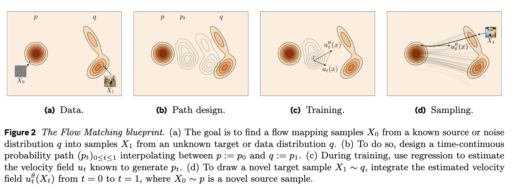
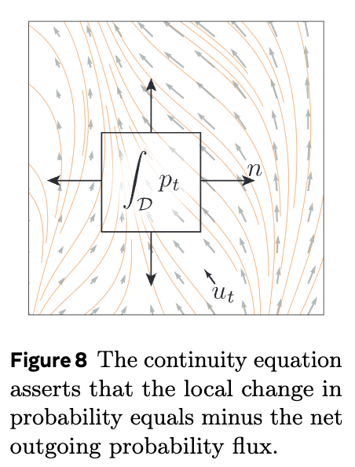
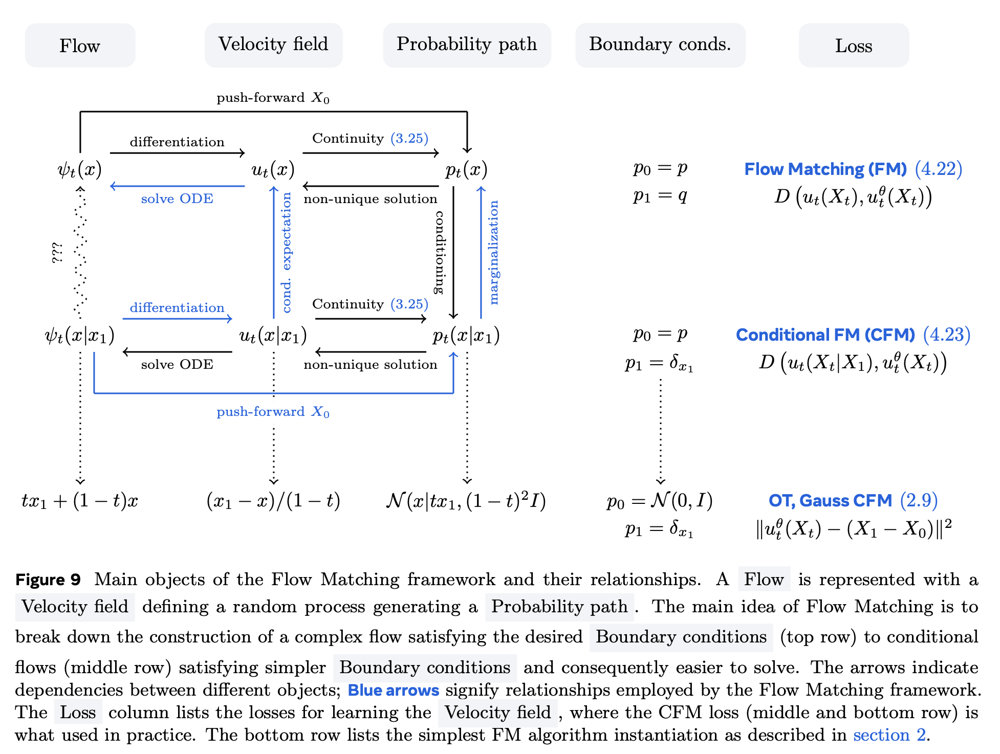
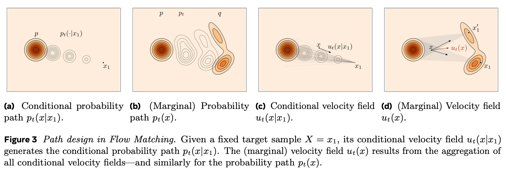
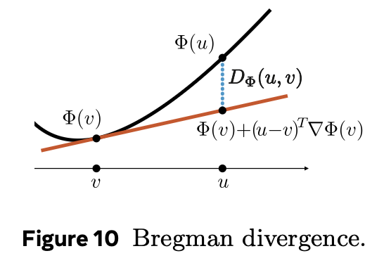
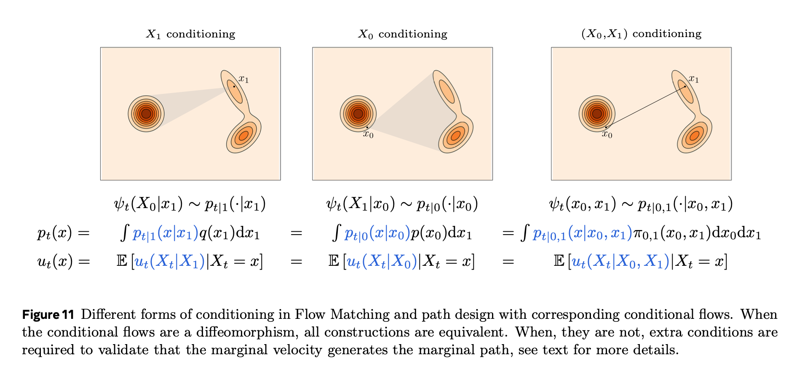
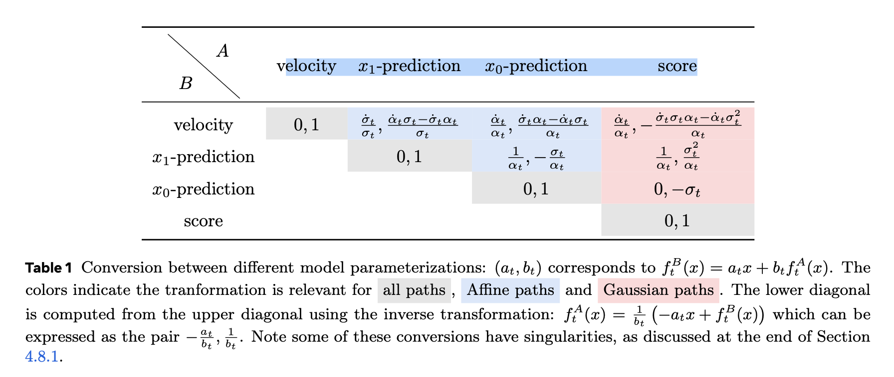

Section B — Flow Matching as the default protagonist¶
Initial version: 2026-02-05 · Last content update: 2026-10-17
Flow models use the mathematics of deterministic probability transport: a velocity field defines trajectories, and those trajectories transform a source law into a model law. The trajectories have no assumed physical meaning. Training selects the field; sampling integrates its ODE.
Notation used throughout. Data states lie in \(\mathbb R^d\). Generation runs from source at \(t=0\) toward data at \(t=1\); formulas with a singular endpoint are stated for \(t<1\).
| Symbol | Meaning |
|---|---|
| \(X_t\), \(x\) | A random vector and a deterministic state; uppercase denotes random vectors. |
| \(\mu_0,\mu_{\mathrm{data}}\); \(p=p_0,q\) | Source and target probability laws; their densities, when they exist. |
| \(\mu_t\); \(p_t\) | A probability path and its density: \(\mu_t(dx)=p_t(x)\,dx\). |
| \(u_t(x)\); \(u_{\theta,t}(x)\) | A specified transport field (the regression target in B2); its learned approximation. |
| \(\psi_t\); \(\psi_{\theta,t}\) | ODE flow maps generated by \(u_t\) and \(u_{\theta,t}\), respectively. |
| \(\mu_{\theta,t}\); \(p_{\theta,t}\) | The learned sampler's law and density; equality to \(\mu_t,p_t\) is a fitting goal. |
| \(\pi_{0,1}\); \(\gamma_t(x_0,x_1)\) | An endpoint coupling and a chosen interpolation map; neither prescribes the marginal ODE's individual trajectories. |
| \(p_{t\mid 1}(x\mid x_1)\); \(p_{1\mid t}(x_1\mid x)\) | The density of \(X_t\) given \(X_1=x_1\), and the reverse conditional density. |
| \(\rho,v,P,\boldsymbol{\sigma},\tau,y\) | Physical mass density, velocity, pressure, stress tensor, time, and position; used only in the fluid comparison. |
We write \(X\sim p\) as shorthand for a law with density \(p\), but use measures in pushforwards and set probabilities. All densities are relative to Lebesgue measure unless a different reference measure is specified; density identities hold almost everywhere, or pointwise under the stated smoothness assumptions. Unmarked spatial derivatives act on the displayed state variable: \(\nabla_x\) is a scalar gradient, \(D_xu\) is the vector-field Jacobian with \((D_xu)_{ij}=\partial u_i/\partial x_j\), and \(\Delta_x\) is the Laplacian. Dots denote differentiation in the displayed time parameter. A conditioning bar indicates a conditional law or expectation; in \(\gamma_t(x_0\mid x_1)\), it only marks \(x_1\) as a fixed parameter of the interpolation map.
B0. Section goal¶
- Treat flow/ODE as the mainline
- Training = learn a vector field
- Sampling = numerical integration (Euler/Heun/RK)

Source notation: \(u_t^\theta\) corresponds to \(u_{\theta,t}\) here. In the embedded caption, “source distribution \(q\)” is a typo: the source is \(p\), as shown in the panels.
Interlude \(\alpha\) — Year 1757¶
Introducing a flow turns learning a data distribution into choosing a transformation of a simple random input. The connection to fluid mechanics is useful only if we distinguish the equations that describe transport from the equations that determine the transporting field. A trajectory equation says how to follow a given field. Newton's momentum balance restricts that field through forces. FM selects a field through a training objective. These are different roles, and the assumptions below support different steps in this construction.
Trajectories from a given velocity field¶
Used by FM: the sampling equation. Let \(x\in\mathbb R^d\), \(t\in[0,1]\), and \(u_t(x)\in\mathbb R^d\), with initial point \(a\in\mathbb R^d\). In FM, \(x\) represents a complete data state, and \(t\) is a chosen generation parameter; neither needs the physical meaning or units of position and time. Giving a velocity field means specifying the instantaneous rate of change at every state and time. A trajectory must accumulate those changes while evaluating the field at its current position:
The integral form follows from the fundamental theorem of calculus. It explains the connection between a local rate and a whole path; it does not establish existence or uniqueness. The initial state is needed because the same field can carry different starting points along different paths. We impose uniqueness so that the ODE specifies an entire sampling trajectory from each initial state without an additional solution-selection rule. The regularity conditions used below are sufficient for this purpose; they are not necessary conditions for every possible sampler. No force law or inertial mass enters this requirement.
Mass conservation and Newton's second law¶
In a fluid, the velocity field is itself an unknown. We need to predict which field develops, not merely follow a field already supplied. In an inertial frame, let \(y\in\mathbb R^3\) denote physical position, \(\tau\in[0,T]\) with \(T>0\) physical time, \(\rho>0\) mass density, \(v\) velocity, \(\boldsymbol{\sigma}\) Cauchy stress, and \(b\) body force per unit mass. Assume smooth fields and no mass sources. For any material volume \(V(\tau)\), whose boundary moves with the fluid, the two balance laws are
The first equation is mass conservation; the second is Newton's momentum balance: momentum change rate equals total force. Here \(n\) is the outward unit normal on the relevant boundary. The quantity \(\boldsymbol{\sigma} n\) is force per unit area exerted across that boundary. The body-force integral and the surface-traction integral are therefore the two contributions to the total force. These are physical balance laws being assumed, not consequences of defining a velocity field.
The transport theorem converts a derivative over a moving volume into local accumulation and transport terms. The divergence theorem converts surface force into a volume integral. Since the balances hold for every material volume, their local forms are
Reused structure: continuity, with probability replacing physical mass. FM uses the first equation's transport structure, replacing \((\rho,v,\tau,y)\) by a probability density and sample-space field \((p_t,u_t,t,x)\). Its justification will be preservation of probability under a map. FM does not impose the second equation, momentum balance, on its field.
Here \((v\otimes v)_{ij}=v_i v_j\), and tensor divergence differentiates the second index. Expanding the left side of momentum balance shows exactly where mass conservation is used:
The material derivative \(Dv/D\tau\) of velocity is acceleration along a moving fluid element. The term \((v\cdot\nabla_y)v\) appears because that element encounters different local velocities as it changes position, even when the field is steady. The material-derivative identity is the chain rule and also applies to a smooth FM field; equating mass density times acceleration to force is the additional physical law. Newton's law relates this acceleration to force per unit volume.
The additional assumptions of incompressible Euler flow¶
Physical constraints not imposed by ordinary FM. Choose constant density \(\rho_0>0\), no body force, and isotropic pressure stress:
Here \(P\) is pressure and \(I\) the identity matrix. For positive \(P\), the minus sign represents compressive traction acting inward. Unequal pressure on opposite faces leaves a net force; the spatial difference becomes the pressure gradient. The relation \(\boldsymbol{\sigma}=-PI\) omits viscous stress. Neither this stress model nor constant density follows from Newton's law. Substituting these choices into the balance laws gives the incompressible Euler equations:
Constant density makes mass conservation require equal local inflow and outflow, hence zero divergence. To specify a concrete evolution problem, take a bounded, connected container \(\Omega\subset\mathbb R^3\) with a smooth, stationary, impermeable wall. Prescribe a smooth initial velocity \(v_0\) that is divergence-free and tangent to the wall:
The initial field specifies the motion already present; an evolution equation alone cannot select it. The wall condition prevents crossing the boundary and permits tangential slip in this inviscid model. Pressure must produce an acceleration that preserves both zero divergence and zero wall-normal velocity. For a smooth solution, taking the divergence and the wall-normal component of momentum balance yields
where \(\partial_nP=n\cdot\nabla_yP\). The Neumann compatibility condition holds because the divergence theorem makes the volume integral of the prescribed Laplacian equal to the boundary integral of the prescribed normal derivative. Given an admissible current velocity, pressure is therefore determined up to a spatial constant at each time; that constant may depend on \(\tau\). Its gradient determines the velocity's time derivative through momentum balance, on the interval where a smooth solution exists. This is the extra field-solving problem imposed by this physical model. Integrating trajectories in a known field does not solve it. Ordinary FM imposes neither these Euler equations nor this pressure boundary-value problem. It does not obtain its field by setting physical mass or forces to zero; those physical variables are absent from its formulation.
Changed problem: learn a transport between distributions. FM specifies a base probability law \(\mu_0\) and a target law \(\mu_{\mathrm{data}}\), then learns a field over the generation interval. It does not evolve a prescribed initial velocity \(v_0\) under Newton's law. Each generated sample still needs an initial state \(X_0\sim\mu_0\). In the sample space \(\mathbb R^d\) used here, there is no container wall and hence no wall boundary condition.
Mathematical conditions for a complete sampling trajectory¶
Sufficient mathematical assumptions for ODE sampling. Return to the sample-space field \(u_t(x)\). Assume continuity in time and local Lipschitz continuity in space, uniformly on compact time-space sets. These conditions justify the deterministic sampler analyzed here; they are not physical laws or necessary conditions for every FM formulation. Choose a closed ball of radius \(r>0\) around \(a\), with spatial Lipschitz constant \(L\) and a velocity bound \(B_u\), uniform over a compact time interval near zero. For continuous curves in that ball, the integral update \((\mathcal T x)_t=a+\int_0^t u_s(x_s)\,ds\) satisfies
Here the norm is the supremum over \([0,h]\). Choose \(h\) within that time interval with \(B_u h\le r\) and \(Lh<1\). The first bound keeps the update in the ball; the second makes it a contraction on the complete space of continuous curves taking values there. Repeated updates therefore converge to a unique fixed point: the local trajectory. More generally, Grönwall's inequality bounds separation between two trajectories remaining in a common compact region:
Equal initial states have zero initial separation, so their futures cannot separate. This is the reason for the uniqueness assumption. Continuity alone is insufficient: for the continuous scalar field \(u(x)=2\sqrt{\max\{x,0\}}\), both staying at zero and waiting until any \(c\in[0,1]\) before following \(x_t=(\max\{t-c,0\})^2\) solve the ODE with \(x_0=0\).
Local uniqueness does not ensure that sampling reaches \(t=1\). The smooth field \(u(x)=x^2\), starting at \(x_0=2\), gives \(x_t=2/(1-2t)\) for \(0\le t<1/2\), and diverges at \(t=1/2\). A sufficient way to exclude such escape is a uniform linear-growth bound with a finite constant \(C\ge0\):
Combined with local existence, this finite bound permits continuation throughout \([0,1]\). To establish invertibility, we need both uniqueness and existence of a backward trajectory from every terminal point. For a fixed \(t\in[0,1]\) and any \(x\in\mathbb R^d\), solve
This reversed field satisfies the same local Lipschitz and growth bounds, so \(\eta_t\) exists uniquely. It gives \(\psi_t^{-1}(x)=\eta_t\), where \(\psi_t(a)=x_t\). Thus every terminal point has exactly one initial point. Invertibility is a consequence of these forward and backward ODE guarantees. This is stronger than merely saying that trajectories do not merge, which establishes injectivity but not surjectivity.
Probability transport and density formulas¶
Used by FM: the law of generated samples. If \(X_0\) has probability law \(\mu_0\), define \(X_t=\psi_t(X_0)\). For every measurable set \(A\),
Normalization is inherited: \(\mu_t(\mathbb R^d)=\mu_0(\mathbb R^d)=1\). This fact needs only a measurable map defined on the initial samples; invertibility is not necessary for a general sampler.
Extra assumptions for a density formula. Invertibility and differentiability become useful when we want a pointwise density formula. If \(D_xu\) is jointly continuous, differentiating the trajectory with respect to its initial point gives, for \(J_t(a)=D_a\psi_t(a)\),
The Jacobian determinant measures how a small transported volume expands or contracts. If the initial law has a density \(p_0\), preserving the probability in that volume gives the change-of-variables formula, almost everywhere:
These Jacobian formulas describe how the density changes. The FM regression loss below does not require evaluating a density or a Jacobian determinant.
Used by FM: the probability continuity equation. The same transport can be expressed without following individual initial points. For a smooth, compactly supported test function \(\varphi\), the chain rule and integration by parts give
All integrals are over \(\mathbb R^d\); compact support removes the boundary term. The PDE holds weakly, and classically when the density is sufficiently smooth. This derivation uses neither Newton's law nor a stress model. It is probability bookkeeping for a deterministic transformation. Probability conservation does not require \(\nabla_x\cdot u_t=0\). FM may use nonzero divergence to change density along trajectories; the incompressible fluid example forbids that volume change.
Learning a field that reaches the target distribution¶
The preceding results would also hold for a smooth field that produces the wrong data distribution. Exact generation additionally requires \((\psi_1)_\#\mu_0=\mu_{\mathrm{data}}\). This condition does not generally identify a unique motion. For example, in two dimensions the standard Gaussian density \(g(x)=(2\pi)^{-1}e^{-\lVert x\rVert^2/2}\) is preserved both by zero velocity and by rotation \(w(x)=\omega(-x_2,x_1)\), with constant \(\omega\in\mathbb R\), since
Thus even an entire density path can leave motion undetermined. FM uses this freedom to construct training examples with known velocities.
Training choices: a coupling and an interpolation. One simple construction takes independent endpoint draws \(Z_0\sim\mu_0\) and \(Z_1\sim\mu_{\mathrm{data}}\) with finite second moments. The chosen linear interpolation has a directly computable derivative:
The endpoint laws are correct by construction: \(\nu_0=\mu_0\) and \(\nu_1=\mu_{\mathrm{data}}\). Endpoint independence and straight interpolation are choices in this example, not requirements of FM. Finite second moments ensure that the velocity label \(V\) is square-integrable here. This does not mean that each paired line must become a learned ODE trajectory. Different pairs can pass through the same state with different velocities. A field taking only \((x,t)\) as input must reconcile those labels.
Used by FM: conditional-mean regression. For each fixed \(t\), define the conditional mean \(m_t\) up to \(\nu_t\)-null sets. Using a jointly measurable version, a square-integrable predictor, and a time \(s\sim\mathcal U[0,1]\) independent of the endpoint pair, the regression identity is
These expectations include \(s,Z_0,Z_1\). The cross term vanishes because \(\mathbb E[V-m_s(S_s)\mid s,S_s]=0\). The second term is therefore independent of the predictor. Uniform time sampling is another training choice; the decomposition also holds with another independent time law, with equality to the minimizer required only almost everywhere under the resulting training measure. Among all square-integrable functions of state and time, the minimizer for the uniform choice is \(m_s\), up to \(ds\,\nu_s(dx)\)-null sets. A restricted neural-network family need not contain this minimizer; within that family the identity only reduces training to approximating \(m_s\).
Used by FM: the link from regression to probability transport. The reason the conditional mean is a valid transport candidate is that it preserves aggregate probability flux. For the same test functions as above,
This establishes a weak continuity equation for \(\nu_t\) with field \(m_t\); it does not establish that \(m_t\) is locally Lipschitz or generates a unique ODE flow. The ODE assumptions are used again at this step: if a representative of \(m_t\) satisfies the stated time-continuity, local Lipschitz, and growth conditions on the whole closed interval, uniqueness of probability transport makes its exact ODE marginals equal to \(\nu_t\), including the target endpoint. A learned field \(u_{\theta,t}\) satisfying those same bounds also generates \(\nu_t\) if \(u_{\theta,t}=m_t\) almost everywhere under \(dt\,\nu_t(dx)\). This equality is sufficient, not necessary: different fields can transport the same marginal laws, as the rotation example shows. The regression identity does not guarantee regularity or exact learning. It identifies one target field; neither the identity nor interpolation alone proves that it has the required regularity or can be represented and learned exactly.
The conditions remain consequential: a \(C^1\) diffeomorphic flow starting from a law with a Lebesgue density still has a density at its endpoint. In \(\mathbb R^2\), it therefore cannot put probability one on a zero-width circle, which has zero area. Exact singular targets fall outside this regular, invertible endpoint setting; a construction aimed at such a target needs different assumptions, for example a justified singular endpoint limit. Finite model capacity, imperfect optimization, and numerical integration can also prevent exact matching. The logical separation is therefore essential: regularity defines a usable transport, the constructed path supplies regression targets, and the continuity equation explains when the learned field produces the desired distribution.
Comparison of assumptions and equations¶
The fluid model is the smooth, inviscid, constant-density Euler flow above: \(y\in\Omega\subset\mathbb R^3\), \(\tau\in[0,T]\), with a fixed impermeable boundary. FM uses \(x\in\mathbb R^d\), \(t\in[0,1]\). Assume sufficient smoothness and integrability for the displayed differential identities; the FM flow conditions are stated below.
Conservation: a fixed mass versus total probability one¶
Let \(M>0\) be the total fluid mass. Let \(p_t\) be the density of the generated sample law \(\mu_t\), with initial density \(p_0\).
| Quantity or equation | Closed fluid system | Deterministic probability transport |
|---|---|---|
| Density | \(\rho(y,\tau)\ge0\) | \(p_t(x)\ge0\) |
| Initial total | \(\int_\Omega\rho(y,0)\,dy=M\) | \(\int_{\mathbb R^d}p_0(x)\,dx=1\) |
| Local continuity equation | \(\partial_\tau\rho+\nabla_y\cdot(\rho v)=0\) | \(\partial_tp_t+\nabla_x\cdot(p_tu_t)=0\) |
| Conserved total | \(\int_\Omega\rho(y,\tau)\,dy=M\) | \(\int_{\mathbb R^d}p_t(x)\,dx=1\) |
The constants differ: \(M\) has units of mass and, in the constant-density example, \(M=\rho_0|\Omega|\). Total probability is dimensionless and equals one because the initial law is normalized. Neither statement says that a pointwise density equals one.
The boundary conditions needed to obtain these global integral identities from the PDE are explicit. For the fluid,
For probability on \(\mathbb R^d\), put \(B_R=\{x:\|x\|<R\}\). If differentiation commutes with the \(R\to\infty\) limit and the boundary flux vanishes,
The sampler also gives normalization directly, without this boundary-limit calculation: if \(\psi_t\) is measurable and defined \(\mu_0\)-almost everywhere,
The exact correspondence is normalization of mass. On the physical domain, define \(r_\tau(y)=\rho(y,\tau)/M\). Since \(M\) is constant,
Thus \(r_\tau\) is a probability density for a location selected in proportion to fluid mass. This gives the same transport equation for a normalized measure; it does not identify physical mass with probability or impose the fluid's momentum equation on FM.
Conservation is local flux balance, not just a fixed total. For fixed smooth subregions \(A\subset\Omega\) and \(B\subset\mathbb R^d\),
For a general compressible fluid or probability flow, these derivatives need not vanish. The constant-density Euler example imposes an additional restriction:
Fluid can cross that internal boundary, but total inflow equals total outflow. FM does not require this balance for each fixed region; its probability there can change.
Conversely, normalization alone does not establish the continuity equation for a specified field. In one dimension, a stationary standard Gaussian density paired with \(u_t(x)=x\) gives
Physical constraints that ordinary FM does not impose¶
The first five rows are model choices or prescribed data. The remaining rows are equations or consequences within that model. “Not imposed” means absent from the FM problem, not that a physical variable is set to zero.
| Constraint | Incompressible Euler example | Ordinary FM |
|---|---|---|
| Constant mass density | \(\rho(y,\tau)=\rho_0>0\) | No constraint \(p_t(x)=\text{constant}\). |
| Inviscid, pressure-only stress | \(\boldsymbol{\sigma}=-PI\), hence \(\boldsymbol{\sigma}+PI=0\) | No physical stress variable \(\boldsymbol{\sigma}\). |
| No body force | \(b=0\) | No physical body-force variable \(b\). |
| Prescribed initial velocity | \(v(y,0)=v_0(y)\) | \(X_0\sim\mu_0\); \(u_0=u_{\theta,0}\) is learned. |
| Stationary impermeable wall | \(v\cdot n=0\) on \(\partial\Omega\) | \(\partial\mathbb R^d=\varnothing\); no container wall. |
| Initial compatibility | \(\nabla_y\cdot v_0=0\), \(v_0\cdot n=0\) | Not imposed on \(u_0\). |
| Incompressibility | \(\nabla_y\cdot v=0\) | \(\nabla_x\cdot u_t\) need not be zero. |
| Newton's momentum equation | \(\rho_0[\partial_\tau v+(v\cdot\nabla_y)v]=-\nabla_yP\) | Not imposed; no pressure unknown \(P\). |
| Pressure Poisson equation | \(\Delta_yP=-\rho_0\nabla_y\cdot[(v\cdot\nabla_y)v]\) | No pressure PDE solve. |
| Pressure boundary condition | \(\partial_nP=-\rho_0n\cdot[(v\cdot\nabla_y)v]\) on \(\partial\Omega\) | No pressure boundary-value problem. |
| Preservation of volume | \(\det D_aY_\tau(a)=1\) | \(\det D_a\psi_t(a)>0\) may vary. |
| Kinetic-energy conservation | \(dE_{\mathrm{fluid}}/d\tau=0\) | \(K'(t)\) need not vanish; example below. |
Here \(Y_\tau(a)\) is the fluid trajectory starting at \(a\). The last two rows follow from the equations; they are not independent postulates. For a smooth fluid flow,
Define \(E_{\mathrm{fluid}}(\tau)=\tfrac12\rho_0\int_\Omega\|v\|^2\,dy\). Dotting momentum balance with \(v\), using \(\nabla_y\cdot v=0\), and integrating gives
This identity requires the smooth, inviscid, unforced, closed-wall model. It is not a general conservation statement for viscous, externally driven, or nonsmooth flows.
What FM retains, and what replaces the physical constraints¶
Retained kinematics and transport. For the learned sampler, set \(u_t=u_{\theta,t}\) for a fixed \(\theta\):
The sufficient ODE conditions used in this article are, with finite constants \(L_R,C\ge0\),
These imply unique complete forward and backward trajectories on the stated interval. With the additional condition \(D_xu\in C([0,1]\times\mathbb R^d;\mathbb R^{d\times d})\), the flow maps are \(C^1\) diffeomorphisms, and
Replacing force-driven evolution with regression. In the linear-interpolation example, take independent \(Z_0\sim\mu_0\), \(Z_1\sim\mu_{\mathrm{data}}\) with \(\mathbb E\|Z_0\|^2+\mathbb E\|Z_1\|^2<\infty\), and an independent \(s\sim\mathcal U[0,1]\):
The field is selected through this objective, not through momentum balance. If both \(u\) and a representative of \(m\) satisfy the stated ODE conditions, exact matching gives
The loss alone does not establish either premise. Likewise, the regular density-setting constraint remains: writing \(\lambda_d\) for Lebesgue measure,
Thus such a sampler cannot put positive probability on a set of zero \(d\)-dimensional volume.
Explicit separation of probability conservation from incompressibility and energy conservation. Choose the alternative training path \(S_t=e^tZ_0\), with \(Z_0\sim\mathcal N(0,I_d)\). Its label is \(\dot S_t=S_t\), so the FM regression target and its exact sampler are
For this correctly transported density,
Here \(K\) is a mathematical expected squared speed, not a physical energy. This sampler preserves total probability while changing volume, density, and expected squared speed. None of those three quantities has to remain constant for ordinary FM.
Related comparisons and limitations¶
A mechanical interpretation introduces extra assumptions. Milanfar's A Lagrangian View of Flow Matching, v2 (2026), Sections 2–3 imposes an invariant denoiser output along trajectories and a residual-form velocity. Its straight-characteristic calculation is conditional on those choices. Our distinction is that the conditional mean learned by ordinary FM is not automatically an inverse flow map; the regression identity above supplies no such invariance condition. This paper is a related interpretation, not a derivation of Newtonian dynamics for ordinary FM.
Conditional straight paths do not establish marginal optimal transport. The original Flow Matching for Generative Modeling, Section 4.1 explicitly notes that an optimal conditional flow does not imply an optimal marginal vector field. Tong et al., Improving and Generalizing Flow-Based Generative Models with Minibatch Optimal Transport (TMLR 2024), Appendix C.1 studies how the coupling affects regression-target variance and training efficiency. These are concrete consequences of path design, not objections to the continuity equation.
Exact transport can conflict with regularity. Zhu and Lin, Switched Flow Matching (2024), Proposition 3.1 examines a connected uniform source and a target on two separated intervals. A continuous flow cannot produce that exact disconnected support from the connected source; approximations can leave a low-probability bridge and require large spatial derivatives. This restriction concerns support and exactness. Several density peaks alone do not constitute disconnected support.
Small regression error needs additional control to imply small distributional error. Su et al., On Flow Matching KL Divergence (2025), Assumptions 3.1–3.3 and Theorem 3.1 bounds terminal KL divergence using the marginal velocity error together with bounds on density scores, their derivatives, and velocity derivatives. The constants depend on those bounds. The conditional training loss also contains the irreducible variance term derived above; its numerical value is not itself the marginal velocity error. This is an analysis of when an error guarantee holds, not evidence that all FM training fails.
A discontinuity claim needs checking against the actual posterior. Theorem 1 of Sha, On the Continuity of Flows, v1 (2025) claims a discontinuity for transport from a Gaussian to a separated Gaussian mixture. The following direct calculation contradicts that claim in its one-dimensional setting. Take independent endpoints \(Z_0\sim\mathcal N(0,1)\) and \(Z_1\sim\tfrac12\mathcal N(-\ell,\delta^2)+\tfrac12\mathcal N(\ell,\delta^2)\), with \(\delta>0\) and \(\ell>2\max\{1,\delta\}\), and use the same linear interpolant \(S_t\). Let \(K\in\{-1,1\}\) label the target mixture component. For \(x\in\mathbb R\) and \(t\in[0,1]\), Gaussian conditioning gives
Both expressions are smooth. In particular, the posterior weight tends to \(1/2\) from either side of \(x=0\); it does not jump between zero and one as asserted in that paper's Equation (9). The mixture has positive density everywhere. Large separation can make the transition steep, but for fixed positive component variance it does not make the field discontinuous. This calculation is our check of that specific claim, not a denial of the disconnected-support or singular-endpoint restrictions above.
Sources for the comparison¶
- Transport as an optimization problem: Benamou and Brenier, A Computational Fluid Mechanics Solution to the Monge-Kantorovich Mass Transfer Problem (2000). The continuity constraint and endpoint conditions support a variational transport problem; they do not by themselves impose incompressible Euler dynamics.
- Regression instead of a force equation: Lipman et al., Flow Matching for Generative Modeling (ICLR 2023). The FM/CFM objectives and their gradient equivalence explain the training construction; Section 4.1 distinguishes conditional OT from marginal OT.
- Coupling changes the learning problem: Tong et al., Improving and Generalizing Flow-Based Generative Models with Minibatch Optimal Transport (TMLR 2024). General endpoint couplings and the target-variance analysis support the discussion of path design.
- Regularity restricts exact transport: Zhu and Lin, Switched Flow Matching: Eliminating Singularities via Switching ODEs (ICML 2024). Proposition 3.1 supplies the connected-source/disconnected-target example.
- Velocity error requires a stability argument: Su et al., On Flow Matching KL Divergence (2025). Its KL bound uses additional regularity assumptions; it is not an unconditional guarantee from a small training loss.
Milanfar's mechanical interpretation and Sha's discontinuity claim are examined above rather than adopted as premises. Their versioned links are collected separately in the references below. The Gaussian-mixture counterexample is derived in this article.
B1. Flow Model¶
The mathematical framework in B1–B2 follows Lipman et al., Flow Matching Guide and Code, v1 (2024), particularly its treatment of flows, marginalization, regression losses, and affine probability paths. Version-specific equation checks are identified in the relevant subsections.
We represent data by random vectors \(X\in\mathbb R^d\), with lowercase \(x\) denoting a possible value. Vector addition, scalar multiplication, and the density and flow constructions below all refer to this Euclidean state space.
A notation we will use frequently is the expectation. If \(X\) has density \(p\) on \(\mathbb{R}^d\) and \(f:\mathbb{R}^d\to\mathbb{R}\) is integrable, we define:
Another recurring object is the conditional expectation. A good engineering way to read \(\mathbb{E}[X\mid Y]\) is: use \(Y\) to predict \(X\), and choose the predictor that minimizes mean squared error. Concretely, given two \(\mathbb{R}^d\)-valued random vectors \(X\) and \(Y\) with \(\mathbb E\|X\|^2<\infty\), minimize over measurable predictors with finite squared risk and define the best approximating function \(g_\star\) in the least-squares sense:
When the joint density \(p_{X,Y}\) exists, write \(p_{X\mid Y}(x\mid y)=p_{X,Y}(x,y)/p_Y(y)\) wherever \(p_Y(y)>0\). The minimizing predictor is unique up to sets of zero probability under the law of \(Y\), and is given by:
B1.1. Prerequisites: smoothness, Lipschitzness, and ODE order¶
Before we talk about diffeomorphisms and push-forward maps, distinguish smoothness, ODE order, and local Lipschitz continuity.
- Smoothness is a property of a function of \(x\) (e.g., \(T(x)\) or \(u_t(x)\)), not a property of “the space \(\mathbb{R}^d\)”. Not every function can be differentiated indefinitely (e.g., \(|x|\) is not differentiable at \(x=0\)). In many flow-model derivations we assume \(C^1\) regularity in \(x\) so that Jacobians / divergences are well-defined and change-of-variables statements are clean.
- Second-order dynamics can be rewritten as a first-order system by augmenting the state. For example, \(\ddot x(t)=a(x(t),\dot x(t),t)\) becomes a first-order system by introducing \(w(t)=\dot x(t)\) and treating \((x(t),w(t))\) as the state.
Finally, a regularity condition that shows up repeatedly for ODEs is local Lipschitzness (in \(x\)).
A function \(f:\mathbb{R}^d\to\mathbb{R}^m\) is locally Lipschitz if for every compact set \(K\subset\mathbb{R}^d\) there exists a constant \(L_K<\infty\) such that for all \(x,x'\in K\),
\[ \lVert f(x)-f(x')\rVert \le L_K\,\lVert x-x'\rVert. \tag{4} \]
Intuition: on any bounded region, \(f\) cannot change “too fast”. For ODEs \(\dot x_t=u_t(x_t)\), local Lipschitzness of \(u_t(\cdot)\) (together with the time-continuity conditions stated in the interlude) is a standard way to guarantee local existence and uniqueness.
B1.2. Diffeomorphisms and push-forward maps (definitions)¶
At a high level, a (normalizing) flow model does two things:
- It applies a deterministic map \(T\) to points \(x\in\mathbb{R}^d\).
- It tracks how this map moves probability mass, i.e., how a distribution changes under \(T\).
These are captured by two standard notions: diffeomorphisms (nice invertible maps) and push-forward maps (how a map acts on distributions).
Diffeomorphism (a “nice” invertible map)¶
Let \(U,V\subseteq\mathbb{R}^d\) be open sets. A map \(T:U\to V\) is a \(C^1\)-diffeomorphism if it is bijective, continuously differentiable, and its inverse is also continuously differentiable:
Intuition: \(T\) can stretch / compress / warp space, but it does not tear it or fold distinct points onto the same point. In flow-based generative modeling, this “invertible and differentiable” structure is what makes likelihood tracking possible.
Push-forward (how a map acts on distributions)¶
Let \(X\sim\mu\) on \(\mathbb R^d\), and let \(T\) be measurable. The law of \(Y=T(X)\) is the pushforward \(\nu=T_\#\mu\). For every measurable set \(A\subseteq\mathbb R^d\),
Here \(T^{-1}(A)\) is the preimage of a set; this definition does not require an inverse map.
If densities exist: change of variables¶
For this generic change-of-variables calculation, write \(\mu(dx)=p(x)\,dx\) and \(\nu(dy)=q(y)\,dy\). If \(T\) is a \(C^1\)-diffeomorphism, the transformed density is
Equivalently, at \(y=T(x)\),
The pushforward acts on probability laws; the Jacobian formula acts on their densities. For a model map \(T_\theta\) and source law \(\mu_0\), the model law is \(\mu_{\theta,1}=(T_\theta)_\#\mu_0\). When its density \(p_{\theta,1}\) exists, maximum likelihood adjusts \(\theta\) to increase that density on observed data. The model density is distinct from the fixed target density \(q\).
It is helpful to view this as two layers: push-forward is the modeling viewpoint (how a map \(T\) acts on distributions), while likelihood is one possible training objective for selecting parameters \(\theta\) after choosing a parameterized family \(T_\theta\). The push-forward construction itself does not require likelihood; the same viewpoint can be paired with other fitting criteria (e.g., adversarial objectives, moment matching, or flow/score matching).
B1.3. Flows and velocity fields¶
So far, we have discussed a single map \(T\). A flow generalizes this to a time-indexed family of maps \(\psi_t\), generated by a time-dependent velocity field \(u_t\).
A \(C^r\) flow \(\psi\) can be defined in terms of a \(C^r([0,1]\times\mathbb{R}^d,\mathbb{R}^d)\) velocity field \(u:[0,1]\times\mathbb{R}^d\to\mathbb{R}^d\), written as \(u(t,x)=u_t(x)\), via the following ODE:
with initial condition
Intuition: at each time \(t\), the vector \(u_t(x)\) tells you which direction the point at location \(x\) should move next, and \(\psi_t(x)\) is “where \(x\) ends up” after flowing for time \(t\).
Local existence, uniqueness, and when \(\psi_t\) is a diffeomorphism¶
A standard result from ODE theory is: if \(u\) is \(C^r\) in \((t,x)\) with \(r\ge 1\) (in particular, locally Lipschitz in \(x\)), then the ODE above has a unique local solution, and \(\psi_t(\cdot)\) is a \(C^r\) diffeomorphism from its domain of definition onto its image (for each fixed \(t\)). This guarantees local existence/uniqueness: solutions may still blow up in finite time unless we assume more (e.g., global Lipschitzness or other growth/integrability conditions). For the endpoint-conditioned constructions below, we first establish a complete flow on every truncated interval \([0,b]\), \(0<b<1\). Existence of a limit at \(t=1\), and invertibility of that limit, are separate questions.
Flow \(\Rightarrow\) distribution transport¶
If \(X_0\sim p_0\) and \(X_t := \psi_t(X_0)\), then the marginal distribution at time \(t\) is the push-forward
When densities exist, this viewpoint leads directly to the continuity equation, which will serve as a backbone for both diffusion- and flow-based generative models.
Flow \(\Leftrightarrow\) velocity field¶
Conversely, given a \(C^1\) flow \(\psi_t\), one can recover its (unique) defining velocity field by using invertibility. Differentiating \(\psi_t(x')\) and setting \(x'=\psi_t^{-1}(x)\) gives
The time derivative above holds the initial coordinate \(a\) fixed; the inverse flow is substituted only after differentiation. Differentiating the entire composition \(\psi_t(\psi_t^{-1}(x))=x\) would instead give zero.
In conclusion: (under suitable regularity) flows \(\psi_t\) and velocity fields \(u_t\) are equivalent ways to represent the same deterministic transport. In ML we often parameterize \(u_t\) by a neural network (e.g., \(u_t(x)\approx u_{\theta,t}(x)\)).
B1.4. Probability paths and the continuity equation¶
The flow viewpoint above (\(X_t=\psi_t(X_0)\)) is a convenient sufficient way to generate a family of distributions \((p_t)_{t\in[0,1]}\). However, it is not the most general way to think about “moving probability mass”.
Probability path = a time-indexed family of distributions¶
A probability path is a family of laws \((\mu_t)_{t\in[0,1]}\) on \(\mathbb R^d\). When these laws have densities, we describe the path by \((p_t)\), with \(\mu_t(dx)=p_t(x)\,dx\). Endpoint laws can exist even when an endpoint density does not.
- In the flow-induced case, \(\mu_t=(\psi_t)_\#\mu_0\) as in \((11)\).
- More generally, one can specify \((p_t)\) without specifying a global deterministic map \(\psi_t\) (e.g., stochastic dynamics, mixture paths, or paths defined via couplings).
In Flow Matching, it is common to build a probability path by choosing a coupling \(\pi_{0,1}\) between endpoints and an interpolation map \(\gamma_t\):
- Sample \((X_0,X_1)\sim \pi_{0,1}\) whose marginal laws are \(\mu_0\) and \(\mu_1\), with densities \(p_0\) and \(p_1\) when they exist.
- Define an interpolation \(\gamma_t:\mathbb{R}^d\times\mathbb{R}^d\to\mathbb{R}^d\), e.g., \(\gamma_t(x_0,x_1)=(1-t)x_0+t x_1\).
- Let \(X_t:=\gamma_t(X_0,X_1)\). Then \(\mu_t=(\gamma_t)_\#\pi_{0,1}\); its density is \(p_t\), when it exists.
This “path-first” viewpoint is one reason Flow Matching can be presented without starting from a likelihood objective.
When do we say a velocity field “generates” a probability path?¶
The guide makes a useful distinction: given an arbitrary probability path \((p_t)\), we say a velocity field \(u_t\) generates \((p_t)\) if, when we solve the flow ODE \(\frac{d}{dt}\psi_t(x)=u_t(\psi_t(x))\) and set \(X_t:=\psi_t(X_0)\) with \(X_0\sim p_0\), the marginal law of \(X_t\) is exactly \(\mu_t\), with density \(p_t\) for every \(t\in[0,1)\).
The interval is often written as \([0,1)\) (open on the right) to handle cases where the target law \(\mu_1\) has compact support or is singular and the velocity field is not well-defined exactly at \(t=1\).
Under the ODE and transport-uniqueness assumptions below, the continuity equation is a way to verify that \(u_t\) generates a prescribed path. Without those assumptions, satisfying the PDE alone does not establish a unique deterministic sampler.
The continuity equation (conservation of probability)¶
If a probability path \((p_t)\) is transported by a (sufficiently regular) velocity field \(u_t\), then \(p_t\) must satisfy the continuity equation
Interpretation: probability is neither created nor destroyed; it only moves with velocity \(u_t\).
It is often convenient to name the probability flux
so \((13)\) becomes \(\partial_t p_t + \nabla\cdot j_t=0\).
Where does \((13)\) come from? It is the differential form of a conservation law.
(1) Notation note: \(\partial\) is overloaded. The symbol \(\partial\) is used in two different ways in this section:
- \(\partial_t p_t(x)\) means a partial derivative with respect to time \(t\).
- \(\partial\Omega\) means the boundary of the region \(\Omega\) (a geometric object), not a derivative.
In \((13b)\), \(\Omega\subset\mathbb{R}^d\) is any fixed region, \(\partial\Omega\) is its boundary, \(n(x)\) is the outward unit normal on \(\partial\Omega\), and \(dS\) is the \((d-1)\)-dimensional surface-area element. The derivative \(\frac{d}{dt}\int_{\Omega} p_t(x)\,dx\) is taken with respect to time \(t\) (the set \(\Omega\) is fixed); it measures how the total probability mass inside \(\Omega\) changes over time.
(2) The key equivalence is the divergence theorem. For a smooth vector field \(F:\mathbb{R}^d\to\mathbb{R}^d\),
This is the mathematical statement that connects “what happens inside a volume” to “what flows through its boundary”. Taking \(F(x)=p_t(x)\,u_t(x)\) turns \((13c)\) into \((13d)\).
Now the derivation is a sequence of standard “accounting” steps:
1) Convert the boundary flux to a volume integral (divergence theorem):
2) Move the time derivative inside the integral (for a fixed \(\Omega\) and regular enough \(p_t\)):
3) Combine the two to get an integral identity over \(\Omega\):

4) Localize: since \(\Omega\) is arbitrary, the only way this integral can be zero for every region is that the integrand vanishes (almost everywhere), which yields \((13)\).
The shared divergence identity expresses local transport balance. In FM it follows from transporting probability by a map; the fluid model additionally imposes momentum balance and a constitutive law, as the interlude shows. Those additional equations are absent from ordinary FM.
Equivalently, rearranging \((13)\), the continuity equation can be read as an explicit “density update rule” \(\partial_t p_t(x) = -\nabla\cdot\big(p_t(x)\,u_t(x)\big)\), which emphasizes that local density changes are fully determined by the divergence of the probability flux \(p_t u_t\) (not merely by \(\nabla\cdot u_t\)).
A “mass conservation” equivalence (PDE \(\Leftrightarrow\) generated path)¶
Here is one sufficient classical setting. For every \(0<b<1\), let \(u\) be continuous in \((t,x)\), continuously differentiable in \(x\), and satisfy \(\|u_t(x)\|\le C_b(1+\|x\|)\) on \([0,b]\). Let \(\mu_t\) be a weakly continuous path of probability laws, with initial law \(\mu_0\). Then the following are equivalent on \([0,b]\):
- \(\mu_t\) solves the weak continuity equation with field \(u_t\) and initial law \(\mu_0\).
- \(\mu_t=(\psi_t)_\#\mu_0\), where \(\psi_t\) is the unique complete ODE flow on \([0,b]\).
The growth bound excludes finite-time escape; local spatial Lipschitz continuity gives trajectory uniqueness. The transported law solves continuity by the chain rule. Conversely, testing continuity against a compactly supported \(C^1\) function transported backward by the flow makes its integral constant, identifying the solution with the pushforward. The growth bound keeps these transported test functions compactly supported on a finite interval. Thus the converse uses uniqueness of transport, not just conservation of the total integral. The guide also presents an integrability-based formulation that gives a flow for almost every source sample; the stronger bounds here make the all-initial-points statement explicit.
To address the endpoint, a separate useful condition is finite expected path length:
Once the pushforward identity is established for \(t<1\), the ODE has integral form
Tonelli's theorem then gives
Almost every sampled trajectory therefore has finite length and a limit \(X_{1^-}\in\mathbb R^d\). If \(\mu_t\Rightarrow\mu_{\mathrm{data}}\), bounded-continuous test functions show \(\operatorname{Law}(X_{1^-})=\mu_{\mathrm{data}}\). This establishes an endpoint sampler without claiming that \(u_1\) exists or that the limiting map is a diffeomorphism. It is compatible with the interlude's obstruction: that obstruction assumed a regular invertible flow through the closed endpoint.
Weak form (often the cleanest statement)¶
For a smooth test function \(\varphi:\mathbb{R}^d\to\mathbb{R}\) with sufficient decay, \((13)\) is equivalent to
This is just integration by parts applied to \((13)\). It is also the cleanest way to define solutions when \(p_t\) is not smooth.
Characteristics: the particle view recovers the PDE¶
If \(X_t\) follows the ODE \(\dot{X}_t=u_t(X_t)\) and its law has density \(p_t\), then \((13)\) describes how that law evolves. Conversely, when \((13)\) holds and \(u_t\) is regular enough, one can interpret \(X_t\) as “particles” moving with velocity \(u_t\), whose density is \(p_t\).
Log-density along a trajectory (connects to likelihood bookkeeping)¶
Assume \(p_t\) is differentiable and strictly positive on the region of interest. Along a trajectory \(t\mapsto x(t)\) that solves \(\dot x(t)=u_t(x(t))\), the continuity equation implies
This identity is the infinitesimal form of change-of-variables: it is the term that becomes the “\(-\mathrm{div}\)” contribution in continuous normalizing flows.
B1.5. Instantaneous change of variables¶
For its use in continuous normalizing flows, see Chen et al., Neural Ordinary Differential Equations (2018), and Grathwohl et al., FFJORD (ICLR 2019).
The change-of-variables rule \((7)\)–\((8)\) tells us how densities transform under a single diffeomorphism \(T\). In continuous time, the transformation from \(t=0\) to \(t=1\) is built from infinitesimal diffeomorphisms along the flow \(\psi_t\). The resulting bookkeeping identity is usually called the instantaneous change of variables (ICoV).
Jacobian dynamics¶
Assume \(\psi_t\) is generated by the velocity field \(u_t\) as in \((9)\)–\((10)\), and \(\psi_t(\cdot)\) is differentiable in \(x\). Let \(J_t(x):=D_x\psi_t(x)\in\mathbb{R}^{d\times d}\) denote the Jacobian of the flow map. Differentiating \(\psi_t\) with respect to \(x\) gives the Jacobian ODE
Taking the log-determinant and using \(\frac{d}{dt}\log\det J_t = \mathrm{Tr}\big(J_t^{-1}\frac{d}{dt}J_t\big)\), we obtain
Density dynamics along the flow (the ICoV formula)¶
Let \(X_0\sim p_0\) and \(X_t=\psi_t(X_0)\) so that \(\mu_t=(\psi_t)_\#\mu_0\) as in \((11)\). When densities exist, the discrete change-of-variables formula applied to \(\psi_t\) reads
Differentiating \(\log p_t(\psi_t(x)) + \log|\det D_x\psi_t(x)|\) in time and using \((17)\) yields exactly the along-trajectory identity \((15)\):
If the flow remains a diffeomorphism through \(t=1\), the density is positive along the trajectory, and the divergence integral exists, integrating \((19)\) gives the continuous-normalizing-flow likelihood identity below. For a singular endpoint, use this identity only up to \(0<b<1\); a Dirac law has no Lebesgue log-density to substitute at \(t=1\).
This is why “divergence of the velocity field” is the continuous-time analogue of the log-Jacobian determinant in ordinary normalizing flows.
B2. Flow Matching¶
The original formulation and FM/CFM gradient-equivalence result are due to Lipman et al., Flow Matching for Generative Modeling (ICLR 2023). The guide cited above develops the broader conditional and Bregman-loss framework used below.

B-fig9. Relations between flow maps, fields, probability paths, and losses. The source figure's \(u_t^\theta\), \(\psi_t(x\mid x_1)\), and \(p_t(x\mid x_1)\) correspond to \(u_{\theta,t}\), \(\gamma_t(x\mid x_1)\), and \(p_{t\mid1}(x\mid x_1)\) here. Its conditional endpoint \(p_1=\delta_{x_1}\) is a law, written \(\mu_{1\mid1}(\cdot\mid x_1)=\delta_{x_1}\) in this article. The bottom-row Gaussian mean should be \(t x_1\): the displayed map \((1-t)x+t x_1\) sends a standard Gaussian source to \(\mathcal N(t x_1,(1-t)^2I_d)\). Equation numbers inside the image refer to the source guide.
Let the source and data laws be \(\mu_0\) and \(\mu_{\mathrm{data}}\), with densities \(p=p_0\) and \(q\) in the density setting used below. Choose a reference probability path \(\mu_t\), with density \(p_t\), joining those endpoints. The network \(u_{\theta,t}\) defines its own flow and model law:
The learned sample is \(X_{\theta,t}=\psi_{\theta,t}(X_0)\), with model density \(p_{\theta,t}\) when it exists. Matching \(\mu_{\theta,t}\) to the prescribed \(\mu_t\) is the training goal, not an identity for arbitrary \(\theta\). In training expectations below, \(X_t\sim p_t\) denotes a reference-path sample, not a sample from the current model.
Revisiting the FM blueprint (B-fig2): (a) pick a known source \(p\) and an unknown data target \(q\); (b) prescribe an interpolation path \(p_t\) from \(p\) to \(q\); (c) learn a neural velocity field \(u_{\theta,t}\) that generates that path; and (d) sample by solving an ODE using the learned \(u_{\theta,t}\).
To learn \(u_{\theta,t}\), FM minimizes a regression loss that matches \(u_{\theta,t}\) to a “ground-truth” velocity field \(u_t\) known to generate the chosen probability path \(p_t\):
A common choice is the squared \(\ell_2\) distance
Data pairs, couplings, and why FM feels supervised¶
FM often looks like supervised learning because we end up with training tuples of the form \((t,X_t,\text{target velocity})\), and we regress \(u_{\theta,t}(X_t)\) to that target using an \(\ell_2\) loss.
The labels come from a chosen coupling \(\pi_{0,1}\): draw a joint pair \((X_0,X_1)\sim\pi_{0,1}\) whose marginals are the source and data laws. Drawing the two endpoints independently is one coupling choice, not the sampling rule for every coupling.
This pairing is the key modeling choice. In most generative settings, there is no natural one-to-one correspondence between a particular \(X_0\) and a particular data point \(X_1\), so \(\pi_{0,1}\) is synthetic (e.g., independent coupling \(\pi_{0,1}=\mu_0\otimes\mu_{\mathrm{data}}\), or a more structured/OT-inspired coupling). The coupling determines what “teacher signal” FM will produce.
Building a probability path from a coupling¶
Given a coupling \(\pi_{0,1}\) and an interpolation map \(\gamma_t:\mathbb{R}^d\times\mathbb{R}^d\to\mathbb{R}^d\), we define

The source figure's \(p_t(x\mid x_1)\) is the conditional density \(p_{t\mid1}(x\mid x_1)\) in this article.
Then the probability path is the law of \(X_t\), with density \(p_t\) when it exists:
A minimal (and very common) choice is linear interpolation \(\gamma_t(x_0,x_1)=(1-t)x_0+t x_1\), but other paths are possible and can change the learning dynamics.
From a path to a generating velocity field¶
Along a paired trajectory \(t\mapsto \gamma_t(x_0,x_1)\), there is an obvious “pairwise” velocity:
However, a generating velocity field \(u_t(x)\) must be a function of \((t,x)\) alone (it cannot depend on the hidden pair \((x_0,x_1)\)). The standard construction is to take a conditional expectation with respect to the induced \(X_t\):
Intuition: many different endpoint pairs can pass through the same intermediate location \(x\) at time \(t\); \((27)\) says the “best” single-valued velocity field at \((t,x)\) (in the least-squares sense) is the conditional mean of those pairwise velocities. This is exactly why we introduced conditional expectation as “the best predictor under MSE”.
Assume the paired curves are absolutely continuous and \(\int_0^b\mathbb E\|\dot\gamma_t(X_0,X_1)\|\,dt<\infty\) for each \(0<b<1\). Then the conditional-mean field in \((27)\) satisfies the weak continuity equation for their marginals. Its interpretation as the least-squares predictor additionally requires square-integrable labels. To conclude that a unique ODE realizes those marginals, we still need the transport conditions from B1.4; smooth paired curves alone do not supply them.
Equation \((27)\) specifies the regression target but does not make it directly evaluable: one sampled pair gives \(\dot\gamma_t(X_0,X_1)\), not the posterior mean \(u_t(X_t)\). B2.3 shows why replacing that intractable mean by the sampled label preserves the population training gradient.
B2.1. Deriving generating velocity fields¶
- \(p_t(x)\) is typically a mixture distribution whose density is not available in closed form;
- \(p_{t\mid 1}(x\mid x_1)\) is a family of simple conditional distributions (usually chosen to be analytically tractable and easy to sample from, e.g. Gaussians);
- the generating velocity field \(u_t(x)\) is the posterior-weighted average of a “conditional velocity” \(u_t(x\mid x_1)\) under \(p_{1\mid t}(x_1\mid x)\).
Continuing from the previous subsection’s notation \((X_0,X_1)\sim\pi_{0,1}\) and \(X_t=\gamma_t(X_0,X_1)\), it is often convenient to denote the “intermediate distribution given the endpoint \(x_1\)” by \(p_{t\mid 1}(\cdot\mid x_1)\) (with the randomness of \(X_0\) understood to have been marginalized out).
More concretely, let \(X_1\sim p_1\) (the endpoint distribution, usually the data distribution), and for each \(t\in[0,1)\) specify a conditional family \(p_{t\mid 1}(x\mid x_1)\), meaning the distribution of \(X_t\) given \(X_1=x_1\). The marginal distribution is then
Since \((28)\) is a mixture over \(x_1\), its density is generally not available in closed form. Suppose a conditional field \(u_t(\cdot\mid x_1)\) transports each conditional path. Under the marginalization and ODE assumptions made explicit in B2.2, a generating marginal field is their posterior average:
where, for \(p_t(x)>0\), the posterior density is given by Bayes’ rule:
Insight (constraint vs. construction). The continuity equation \((13)\) is simultaneously (i) a dynamical constraint—a necessary condition that any pair \((p_t,u_t)\) must satisfy if \(u_t\) is to generate the path \((p_t)\)—and (ii) the bridge that ties together “density evolution” (\(p_t\)) and “transport field” (\(u_t\)). In classical PDE language one often solves \(\partial_t p_t + \nabla\cdot(p_t u_t)=0\) for \(p_t\) given \(u_t\) and an initial condition \(p_0\). In Flow Matching we frequently take the opposite stance: we construct a probability path \((p_t)\) (e.g. via a coupling \(\pi_{0,1}\) and an interpolation \(\gamma_t\)) and then build a generating field \(u_t\) that satisfies the constraint. This perspective also highlights a non-uniqueness: for a fixed path \((p_t)\), there can be many velocity fields \(u_t\) that satisfy \((13)\); FM’s “conditional expectation” recipe \((27)\) is one principled way to pick a single-valued \(u_t(x)\) from latent pairwise velocities.
B2.2. General conditioning and the Marginalization Trick¶
In the previous subsection, the conditioning variable was the endpoint \(X_1\) (so we wrote \(p_{t\mid 1}(x\mid x_1)\)). More generally, we can condition the path on an arbitrary auxiliary random variable \(Z\) taking values in some space \(\mathcal{Z}\). Concretely, for each \(t\in[0,1)\) and \(z\in\mathcal{Z}\), suppose we specify a simple conditional distribution \(p_{t\mid Z}(x\mid z)\). The resulting marginal path is the mixture over \(Z\):
Here \(p_Z(z)\,dz\) denotes the law of \(Z\) relative to a fixed reference measure: Lebesgue measure for a continuous variable, counting measure for a discrete one. All later \(z\)-integrals use this convention. If no such density is chosen, the same formulas use the measure \(\mu_Z(dz)\) directly.
Insight. This “general conditioning” viewpoint simply enlarges the previous construction: \(Z\) does not have to be \(X_1\); it can be any variable that indexes a convenient family of conditional paths.
Marginalization trick: from conditional velocities to a marginal (generating) velocity¶
Assume that for each \(z\in\mathcal{Z}\), the conditional density \(p_{t\mid Z}(\cdot\mid z)\) is transported by a conditional velocity field \(u_t(\cdot\mid z)\) in the sense of the continuity equation:
Multiply \((32)\) by \(p_Z(z)\) and integrate over \(z\). Under mild regularity that justifies swapping \(\partial_t\) / \(\nabla\cdot\) with the \(z\)-integral, we obtain
where we used \((31)\) to identify \(p_t(x)=\int p_{t\mid Z}(x\mid z)p_Z(z)\,dz\). Equation \((33)\) is again a continuity equation for the marginal path \((p_t)\), with probability flux
Whenever \(p_t(x)>0\), we can therefore define the marginal (generating) velocity field \(u_t(x)\) via \(j_t(x)=p_t(x)\,u_t(x)\), i.e.
Now apply Bayes’ rule to form the posterior over the conditioning variable at time \(t\):
Substituting \((36)\) into \((35)\) yields the advertised “posterior-weighted average” form:
This is the general version of the earlier special case \(Z=X_1\).
Why \(\ell_2\) regression recovers this conditional expectation¶
Fix \(t\in[0,1)\) and consider the regression viewpoint with \(X:=X_t\in\mathbb{R}^d\) as the observed input and \(Y:=u_t(X_t\mid Z)\in\mathbb{R}^d\) as the “label” (a random vector because \(Z\) is latent given \(X\)). Assume \(\mathbb E\|Y\|^2<\infty\). Over measurable \(g:\mathbb{R}^d\to\mathbb{R}^d\) with \(\mathbb{E}\|Y-g(X)\|^2<\infty\), the minimizer of
is
Therefore, the population-optimal \(\ell_2\) regressor implied by the conditional-velocity construction is exactly the marginal velocity \((37)\):
Note (why not \(\ell_1\)). In 1D, \(\ell_1\) regression returns a (conditional) median, not a mean:
since the optimality condition is the subgradient balance \(\mathbb{P}(Y\le g\mid X=x)\ge \tfrac12\) and \(\mathbb{P}(Y\ge g\mid X=x)\ge \tfrac12\). For an empirical 1D sample, the minimizer is the usual median (odd \(n\): one observed instance; even \(n\): any point between the two middle instances).
The marginalization trick above is fundamentally linear: mixing conditional solutions mixes their fluxes, which yields the posterior mean \(u_t(x)=\mathbb{E}[u_t(x\mid Z)\mid X_t=x]\). The mean is linear; the median is not. So swapping \(\ell_2\) for \(\ell_1\) generally selects an order-statistic-type field (a median of conditional velocities) rather than a linear mixture, and need not satisfy the continuity equation for the prescribed \(p_t\).
Note (what is linear in the continuity equation). The continuity equation \(\partial_t p_t + \nabla\cdot(p_t u_t)=0\) is linear in \((p_t,j_t)\) when written in flux form, where \(j_t := p_t u_t\):
It is not jointly linear in \((p_t,u_t)\), because their product enters the flux. For a fixed \(p_t\), however, the operator \(u_t\mapsto\nabla\cdot(p_tu_t)\) is linear. Recovering a field from a varying pair \((p_t,j_t)\) through \(u_t=j_t/p_t\) is the nonlinear step. The marginalization step in Theorem 3 uses exactly this \((p,j)\)-linearity plus the ability to interchange \(\partial_t\) and \(\nabla\cdot\) with the \(z\)-integral (justified by the regularity / integrability assumptions): define \(p_t(x)=\int p_{t\mid Z}(x\mid z)\,p_Z(z)\,dz\) and \(j_t(x)=\int j_{t\mid Z}(x\mid z)\,p_Z(z)\,dz\) with \(j_{t\mid Z}:=p_{t\mid Z}u_t(\cdot\mid z)\), then integrating \(\partial_t p_{t\mid Z}+\nabla\cdot j_{t\mid Z}=0\) over \(z\) yields \(\partial_t p_t+\nabla\cdot j_t=0\).
As a related aside, use a separate forward-noising clock \(s\in[0,1]\), with density \(\widetilde p_s\), prescribed drift \(f(s,x)\), and scalar, state-independent diffusion coefficient \(g(s)\). The Fokker–Planck equation for the SDE in \((91)\) is
Here \(\Delta_x=\sum_{i=1}^d\partial_{x_i}^2\) is the scalar Laplacian, not a Hessian. With \(f,g\) fixed, this PDE is linear in \(\widetilde p_s\) despite its second-order spatial term. B2.6.3 relates the noising clock \(s\) to the generation clock \(t=1-s\).
In this sense, both Flow Matching (deterministic transport; first-order generator) and Diffusion (stochastic dynamics; second-order generator) fit the same generator-based template: the induced density evolution equation is linear in \(p\).
Summary (two theorems glued together, not a coincidence).
- (PDE / marginalization, under the transport assumptions below) If each conditional path \((p_{t\mid Z}(\cdot\mid z))\) is generated by \(u_t(\cdot\mid z)\), then the marginal path \((p_t)\) is generated by the posterior average \(u_t(x)=\mathbb{E}[u_t(x\mid Z)\mid X_t=x]\).
- (Projection / \(\ell_2\) optimality) The minimizer of an \(\ell_2\) regression loss is the conditional expectation \(\mathbb{E}[Y\mid X]\).
- Putting them together: FM (i) identifies the marginal generating velocity as a conditional expectation, and (ii) uses \(\ell_2\) regression whose population optimum is exactly that conditional expectation.
Why do we condition? (Turning an implicit target into supervised data)¶
At the level of the generator’s structure, the object we ultimately want is the marginal generating velocity \(u_t(x)\) in \((37)\). But \(u_t(x)\) is typically not directly labelable: evaluating it at a given \(x\) requires the posterior integral \(\int u_t(x\mid z)\,p_{Z\mid t}(z\mid x)\,dz\), and \(p_{Z\mid t}(z\mid x)\) involves the intractable marginal \(p_t(x)\) in the denominator \((36)\). So even if we can write down (and sample from) the conditional mechanism \(p_{t\mid Z}(\cdot\mid z)\) and compute \(u_t(\cdot\mid z)\), we usually cannot form “ground-truth” pairs \((x, u_t(x))\).
Conditional Flow Matching resolves this by manufacturing supervised training pairs from the conditional world:
- sample a time \(t\),
- sample a latent \(z\sim p_Z\),
- sample an intermediate state \(x_t\sim p_{t\mid Z}(\cdot\mid z)\),
- compute the tractable conditional label \(y := u_t(x_t\mid z)\),
- regress a model \(g(x,t)\) on pairs \((x_t,t)\mapsto y\) using an \(\ell_2\) loss.
The “supervised learning essence” is that conditioning turns an implicit marginal target into an explicit random label \(Y=u_t(X_t\mid Z)\) paired with an observable input \(X=X_t\). Then the standard \(\ell_2\) projection theorem \((39)\) guarantees that, at the population level,
Thus the unrestricted population regression optimum is the marginal velocity, without evaluating the posterior weights \(p_{Z\mid t}(z\mid x)\). A finite trained network need not attain that optimum.
Assumption 1 (explicit sufficient conditions for the classical construction). Write \(j_{t\mid Z}(x\mid z)=p_{t\mid Z}(x\mid z)u_t(x\mid z)\). For almost every \(z\), assume the conditional density and field are \(C^1\) in \((t,x)\) on \([0,1)\times\mathbb R^d\). For each \(0<b<1\) and compact \(K\subset\mathbb R^d\), require an envelope \(H_{b,K}\) with
This is the condition that justifies differentiating the mixture. Bounded support of \(Z\), by itself, does not bound the integrand or its derivatives as functions of \(z\). Also assume \(p_t(x)>0\) and that the resulting marginal field \(u_t=j_t/p_t\) satisfies, for every \(0<b<1\), a bound with a finite constant \(C_b\ge0\):
These are sufficient, not minimal, conditions. They make the differentiation and ODE steps explicit in the classical version of the guide's marginalization argument.
Theorem 3 (Marginalization Trick, classical version used here). Under Assumption 1, if each conditional law is transported by its conditional field, then \(p_t\) and \(j_t\) defined in \((31)\) and \((34)\) satisfy continuity. Their ratio \(u_t\) generates the marginal path on every \([0,b]\), \(0<b<1\).
Indeed, \((41a)\) permits mixing the conditional continuity equations and makes \(p_t,j_t\) continuous in time and \(C^1\) in space. Positivity of \(p_t\) makes \(j_t/p_t\) locally Lipschitz; \((41b)\) prevents escape. B1.4 then identifies the ODE marginals with the constructed mixture. For a sampled endpoint limit, the additional sufficient condition is the time-integrated conditional speed bound
Jensen's inequality implies \((13g)\) from \((41c)\). Finite expected speed at each separate time does not imply a finite integral over time.
What this theorem is really saying (and why it matters)¶
Theorem 3 establishes closure under mixing, subject to its regularity and integrability assumptions: integrate the conditional densities and their fluxes against the same law of \(Z\), and the resulting pair still satisfies continuity. To obtain a unique ODE sampler for that path, the resulting marginal field must also satisfy the transport-uniqueness assumptions.
The key points behind the proof are:
- Joint linearity is in \((p,j)\). The equation \(\partial_t p+\nabla\cdot j=0\) is jointly linear in density and flux. It is not jointly linear in \((p,u)\); holding \(p\) fixed makes its dependence on \(u\) linear.
- Regularity survives mixing (under the stated assumptions). With \(p_{t\mid Z}(\cdot\mid z)\in C^1\) in \((t,x)\) and the domination condition \((41a)\), the marginal \(p_t(x)=\int p_{t\mid Z}(x\mid z)p_Z(z)\,dz\) inherits the needed differentiability.
- Integrability is controlled by convexity / Jensen. Since the marginal velocity is a conditional expectation \(u_t(x)=\mathbb{E}[u_t(x\mid Z)\mid X_t=x]\), Jensen gives \(\|u_t(x)\|\le \mathbb{E}[\|u_t(x\mid Z)\|\mid X_t=x]\), which helps ensure the expected speed condition (e.g. \(\int_0^1\!\int \|u_t(x)\|p_t(x)\,dx\,dt<\infty\)) whenever the conditional one is integrable.
Conditional regression supplies the candidate marginal field; the regularity and growth assumptions turn it into a unique sampler for \(t<1\). A sampled endpoint limit uses the additional time-integrability argument.
The implication chain.
- CE is linear in \((p,j)\).
- Each conditional flow \((p_{t\mid Z}(\cdot\mid z), j_{t\mid Z}(\cdot\mid z))\) satisfies CE.
- Mixing over \(z\) preserves CE, so the marginal \((p_t,j_t)\) satisfies CE.
- The regularity and growth assumptions identify this solution with the unique ODE pushforward.
- The time-integrated speed bound and target weak limit identify the sampled endpoint law. Normalization already follows by mixing normalized conditional laws.
Why \(\int_\Omega \nabla\cdot(\cdot)\,dx\) becomes a boundary term (and when it vanishes)¶
Start from the continuity equation, most transparently written in flux form. Let \(p_t:\mathbb{R}^d\to\mathbb{R}_{\ge 0}\) be a density and \(u_t:\mathbb{R}^d\to\mathbb{R}^d\) a velocity field, and define the probability flux \(j_t(x):=p_t(x)\,u_t(x)\). The continuity equation is
Let \(\Omega\subset\mathbb{R}^d\) be a region with piecewise smooth boundary \(\partial\Omega\), outward unit normal \(n(x)\), and surface-area element \(dS\). Integrating over \(\Omega\) and (under sufficient regularity) moving \(\partial_t\) inside the integral gives
The key is the second term. The Gauss (divergence) theorem states that for any sufficiently smooth vector field \(F:\Omega\to\mathbb{R}^d\),
Taking \(F=j_t\) (i.e. \(F=p_t u_t\)) yields
Substituting into \((A2)\) gives the “mass balance / net flux” identity:
Interpretation: \(\int_\Omega p_t\) is the total probability mass inside \(\Omega\). The right-hand side is the net outward flux through \(\partial\Omega\). Hence the mass changes exactly by “minus net outflow”.
What does “the boundary term is zero” mean?¶
Common ways to make \(\int_{\partial\Omega} j_t\cdot n\,dS=0\) (think: different domain choices / boundary conditions) include:
- \(\Omega=\mathbb{R}^d\) with sufficient decay at infinity. Consider \(\Omega_R=\{x:\|x\|\le R\}\) and send \(R\to\infty\). If \(j_t(x)\) decays fast enough that \(\int_{\partial\Omega_R} j_t\cdot n\,dS\to 0\), the boundary contribution vanishes. Intuition: no probability mass flows in/out “from infinity”.
- Periodic boundary conditions (a torus / periodic box). Contributions from opposite faces cancel, so the net flux is zero.
-
No-flux (reflecting / Neumann-type) boundary conditions. Impose
\[ j_t(x)\cdot n(x) = 0,\qquad x\in\partial\Omega, \tag{A6} \]
meaning probability mass cannot cross the boundary.
When the boundary term is zero, \((A5)\) reduces to \(\frac{d}{dt}\int_\Omega p_t(x)\,dx=0\), so the total mass \(\int_\Omega p_t(x)\,dx\) is conserved in time. In particular, if \(\int_\Omega p_0(x)\,dx=1\), then \(\int_\Omega p_t(x)\,dx=1\) for all \(t\).
B2.3. Flow Matching loss¶

B-fig10. Bregman divergence. The figure's generic arguments \(u,v\) correspond to \(a,b\) in \((42a)\); they do not denote the physical and FM velocity fields.
The key modeling stance is: Flow Matching matches a path, not just the final density. Instead of directly minimizing a discrepancy between \(p_1\) and some model density \(p_{\theta,1}\), FM matches the generator (a velocity field) along the prescribed intermediate marginals \((p_t)\). If \(u_{\theta,t}\) matches the true generating field \(u_t\) for \(t\in[0,1)\), then, under the ODE and transport-uniqueness conditions, its marginals follow the intended path on \([0,1)\). Reaching the endpoint additionally requires a well-defined endpoint flow or a justified weak limit \(\mu_t\Rightarrow\mu_{\mathrm{data}}\) as \(t\uparrow1\).
At the loss level, this is written as an expected discrepancy between vectors \(u_{\theta,t}(x)\) and \(u_t(x)\), averaged over \(t\) and \(x\sim p_t\). A central class of losses is Bregman divergences: given a strictly convex potential \(\Phi:\mathbb{R}^d\to\mathbb{R}\) of class \(C^2\), define
Then the (population) flow matching loss is
For \(\Phi(v)=\frac12\|v\|^2\), \(D_\Phi(a,b)=\frac12\|a-b\|^2\). This convention is half of \((23)\); the positive constant rescales losses and gradients but leaves their minimizers unchanged. FM and CFM use the same convention when their gradients are compared.
The only remaining question is: where do the labels \(u_t(X_t)\) come from? In general, the marginal target \(u_t(x)\) is not directly computable because it is defined via a latent-variable marginalization (Theorem 3): it contains a posterior average over \(Z\) given \(X_t=x\).
Conditional Flow Matching (CFM): supervised labels from a latent variable¶
Assume we have a latent variable \(Z\sim p_Z\), a conditional family \(p_{t\mid Z}(\cdot\mid z)\), and a tractable conditional velocity field \(u_t(\cdot\mid z)\) that generates \(p_{t\mid Z}(\cdot\mid z)\). Then we can construct supervised samples by:
- sample \(t\sim\mathcal U[0,1]\),
- sample \(z\sim p_Z\),
- sample \(X_t\sim p_{t\mid Z}(\cdot\mid z)\),
- set the label \(Y:=u_t(X_t\mid z)\),
- regress \(u_{\theta,t}(X_t)\) onto \(Y\).
This yields the conditional flow matching objective:
Even though \(\mathcal{L}_{\mathrm{FM}}\) in \((42)\) is generally not directly computable (because it depends on the intractable marginal velocity \(u_t\)), CFM has the same population gradient as FM under the conditions below. Individual sampled gradients need not agree.
Theorem 4 (Gradient equivalence). Fix the time law, coupling, interpolation, and potential \(\Phi\) independently of \(\theta\). Assume the losses are finite, the model is differentiable in \(\theta\), and differentiation can pass through the expectation (for example, by an integrable local bound on the parameter gradient). Then
\[ \nabla_\theta \mathcal{L}_{\mathrm{FM}}(\theta) \;=\; \nabla_\theta \mathcal{L}_{\mathrm{CFM}}(\theta). \tag{44} \]
The stronger identity is
The last term is independent of \(\theta\) under the fixed-construction assumption. It need not be zero, so equal gradients do not imply equal loss values. If the coupling or interpolation is itself trained with \(\theta\), this argument must be reconsidered.
Proof of the gradient identity. For fixed \(t\) and \(x\), write the marginal target as a conditional expectation \(u_t(x)=\mathbb{E}[u_t(x\mid Z)\mid X_t=x]\). The key identity is that the gradient of a Bregman divergence is affine in its first argument:
so for any \(\alpha,\beta\in\mathbb{R}\) with \(\alpha+\beta=1\) and any \(u_1,u_2,v\in\mathbb{R}^d\),
and, more generally, for any integrable random vector \(Y\in\mathbb{R}^d\),
so \(\nabla_b D_\Phi(\mathbb{E}[A],b)=\mathbb{E}[\nabla_b D_\Phi(A,b)]\). Plug this into the chain rule expression for \(\nabla_\theta \mathcal{L}_{\mathrm{FM}}\), and the conditional expectation over \(Z\) moves “through the gradient”, turning the marginal label into the conditional label and yielding \(\nabla_\theta \mathcal{L}_{\mathrm{CFM}}\).
Proposition 1 (Bregman regression learns conditional expectations). Let \(X\) and \(Y\) be random variables with \(X,Y\in\mathbb{R}^d\), assume \(\mathbb{E}\lVert Y\rVert<\infty\), and assume the expectations below are finite. For a strictly convex \(C^2\) potential \(\Phi:\mathbb{R}^d\to\mathbb{R}\), the population minimizer of
\[ \mathbb{E}\big[D_\Phi(Y, g(X))\big] \tag{46a} \]over measurable functions \(g\) is
\[ g_\star(x) \;=\; \mathbb{E}[Y\mid X=x], \tag{46b} \]up to sets of zero probability under the law of \(X\). This is the ordinary conditional mean for every such potential, including \(\Phi(v)=\frac12\|v\|^2\).
To verify the claim, set \(m(X)=\mathbb{E}[Y\mid X]\). Expanding the definition and using \(\mathbb{E}[Y-m(X)\mid X]=0\) gives
The first term is independent of the predictor; strict convexity makes the second term nonnegative and zero exactly at \(g(X)=m(X)\).
Correction (2026-10-14). The previous version of this note used \((\nabla\Phi)^{-1}(\mathbb{E}[\nabla\Phi(Y)\mid X=x])\) for this objective. That expression belongs to the reversed objective \(\mathbb{E}[D_\Phi(g(X),Y)]\), when the required expectations and inverse exist. It does not apply when the target occupies the first argument. The source Flow Matching Guide and Code, v1, Eq. (4.26) gives the conditional mean correctly; the error was introduced in this note.
Fix \(t\) and define \(X:=X_t\) and \(Y:=u_t(X_t\mid Z)\). By the \(\ell_2\) projection theorem (already used in \((39)\)), the population minimizer of \(\mathbb{E}[\|Y-g(X)\|^2]\) is \(g_\star(x)=\mathbb{E}[Y\mid X=x]\). Thus, if the model family contains the conditional mean and optimization attains a global population minimum, the fitted field satisfies
for \(dt\,p_t(x)\,dx\)-almost every \((t,x)\). This identifies the regression optimum; its use as an ODE sampler still requires the transport assumptions. Data availability and representational capacity alone do not guarantee optimization reaches that optimum.
For the argument order \(D_\Phi(Y,g(X))\), changing the potential preserves the unrestricted population optimum \(\mathbb{E}[Y\mid X]\). A restricted neural-network family need not represent that optimum exactly; the loss can still affect its best approximation and optimization dynamics.
General time sampling (engineering note)¶
Replacing uniform time sampling by a density \(\omega(t)\) changes the objective to a weighted time integral. FM/CFM gradient equivalence still holds if both use that same fixed weight. To identify the same unrestricted target for Lebesgue-almost every time, require \(\omega(t)>0\) almost everywhere; a zero-weight interval supplies no training constraint there. For a restricted network family, even positive weights can change the best approximation.
If the goal is to change the sampling frequency while preserving the original uniform objective, importance weighting is required. With \(\ell_\theta(t)\) the conditional expected loss at time \(t\),
This identity requires integrability; it does not guarantee finite estimator variance.
B2.4. Solving unconditional generation with conditional flows¶
At this point, training a flow model \(u_{\theta,t}\) can be reduced to three concrete steps:
- Find a family of conditional probability paths \(p_{t\mid Z}(x\mid z)\) whose mixture \(p_t(x)=\int p_{t\mid Z}(x\mid z)p_Z(z)\,dz\) defines the desired marginal path (and satisfies the usual boundary / mass-conservation requirements).
- Find conditional velocity fields \(u_t(x\mid z)\) that generate each conditional path \(p_{t\mid Z}(\cdot\mid z)\).
- Verify that mixing gives a well-posed marginal field, then train \(u_{\theta,t}\) with CFM (B2.3). The loss requires sampling \(z\) and \(X_t\mid Z=z\) and evaluating the conditional label; it does not require evaluating \(u_t\).
What remains is a practical question: how do we design such conditional paths and conditional velocity fields?
A flexible construction via conditional flows¶
One general approach is to build a conditional flow map and obtain both \(p_{t\mid 1}(x\mid x_1)\) and \(u_t(x\mid x_1)\) from it. Here the conditioning variable is the endpoint \(X_1=x_1\).
Define a conditional flow \(\gamma:[0,1)\times\mathbb{R}^d\times\mathbb{R}^d\to\mathbb{R}^d\), written \(\gamma_t(x\mid x_1)=\gamma_t(x,x_1)\), such that
and assume \(\gamma\) is smooth in \((t,x)\) and a diffeomorphism in \(x\) for each \(t\in[0,1)\) (conditions can be relaxed, but smoothness keeps the discussion simple).
Now define the conditional flow model
Here \(X_1\sim\mu_{\mathrm{data}}\), and \(\pi_{0\mid 1}(\cdot\mid x_1)\) is the conditional law of \(X_0\) under \(\pi_{0,1}\). Its pushforward is a conditional law; its density exists when the base conditional law has a density:
Finally, by the standard equivalence between flows and velocity fields, the corresponding conditional velocity field is uniquely determined by \(\gamma\) via differentiation:
The map \(\gamma_t(\cdot\mid x_1)\) supplies both a conditional path and a conditional velocity. Endpoint constraints alone are insufficient: its regularity and invertibility justify \((49)\)–\((50)\), and the mixture must separately satisfy the marginal transport conditions.

The source figure writes the constructed conditional map as \(\psi_t\); this article calls it \(\gamma_t\), reserving \(\psi_t\) for the marginal ODE flow. The interpolated samples and ODE samples can have the same time marginals without following the same individual paths.
Derivation: rewriting the CFM loss using a conditional flow \(\gamma_t(\cdot\mid x_1)\)¶
Revisit the CFM objective \((43)\) in the special case \(Z=X_1\). Using the conditional path induced by the conditional flow \(\gamma_t(\cdot\mid x_1)\), we can write
Now use the sampling representation \((48)\): for a given \(X_1\), sample \(X_0\sim \pi_{0\mid 1}(\cdot\mid X_1)\) and set \(X_t=\gamma_t(X_0\mid X_1)\). By the Law of the Unconscious Statistician (LOTUS), \(X_t\sim p_{t\mid 1}(\cdot\mid X_1)\) can therefore be replaced by \((X_0,X_1)\) sampling:
Here \(\pi_{0,1}\) denotes the joint law of \((X_0,X_1)\), i.e. sample \(X_1\sim p_1\) and then \(X_0\sim \pi_{0\mid 1}(\cdot\mid X_1)\).
Finally, the conditional velocity field induced by \(\gamma\) satisfies (by definition \((50)\)) the identity
Substituting \((53)\) into \((52)\) yields the practical “supervised” form: the label is simply \(\dot\gamma_t(X_0\mid X_1)\) evaluated along the sampled conditional flow trajectory.
In the squared-\(\ell_2\) case (i.e. \(D_\Phi(a,b)=\frac12\|a-b\|^2\)), Proposition 1 reduces to the usual conditional mean optimality. The population minimizer of \(\mathcal{L}_{\mathrm{CFM}}\) therefore satisfies
which matches the earlier “marginal velocity = conditional expectation” principle, now expressed directly in terms of the conditional flow map \(\gamma_t(\cdot\mid x_1)\).
Corollary 1 (conditional-flow construction). Let \(\gamma_t(\cdot\mid x_1)\) be a smooth diffeomorphism for \(t<1\), satisfying \((47)\), and suppose the conditional laws have densities. If the induced densities and fields satisfy Assumption 1 with \(Z=X_1\), their posterior mean \((54)\) generates the marginal path for \(t<1\). If also \(\int_0^1\mathbb E\|\dot\gamma_t(X_0\mid X_1)\|\,dt<\infty\), then the ODE has an almost-sure endpoint limit with the target law. The target weak limit follows from \(\gamma_t(X_0\mid X_1)\to X_1\) and bounded-continuous test functions.
This density-based corollary does not cover every coupling in B2.7. For an invertible deterministic OT map, for example, \(\pi_{0,1}=(\mathrm{Id},T_{\mathrm{OT}})_\#\mu_0\) gives \(\pi_{0\mid1}(\cdot\mid x_1)=\delta_{T_{\mathrm{OT}}^{-1}(x_1)}\), a singular conditional law. Pairwise regression and the weak conditional-expectation identity \((27)\) still make sense; the density assumptions of this corollary cannot be invoked for that coupling.
Conditioning notation and a collapse counterexample. For a fixed joint law and the same map, \(\gamma_t(X_0\mid X_1)\) and \(\gamma_t(X_0,X_1)\) define the same random vector by notation alone; no invertibility is needed for that equality of laws. Invertibility in the first input is needed to recover an endpoint-conditioned velocity through \((50)\). Recovering a source-conditioned velocity by the analogous inverse requires invertibility in the second input, generally only at interior times.
However, a twice continuously differentiable endpoint interpolant need not admit a unique deterministic ODE realizing its marginals. A standard counterexample is
\[ \gamma_t(x_0,x_1) := \big((1-2t)_+\big)^\kappa\,x_0 + \big((2t-1)_+\big)^\kappa\,x_1, \qquad (s)_+ := \max\{s,0\}, \qquad \kappa>2, \tag*{} \]for which \(\gamma_0(x_0,x_1)=x_0\), \(\gamma_1(x_0,x_1)=x_1\), but \(\gamma_{1/2}(x_0,x_1)=0\) for all \((x_0,x_1)\). Hence, if \(X_t:=\gamma_t(X_0,X_1)\), then \(X_{1/2}=0\) almost surely and the marginal law is \(\mu_{1/2}=\delta_0\). If a well-posed deterministic Markov velocity field \(u_t(x)\) were to generate this marginal path (in the sense of the continuity equation and the flow ODE), that delta collapse would force \(\mu_t\) to remain a delta for all \(t>1/2\), contradicting a non-degenerate endpoint distribution at \(t=1\). The takeaway is: when constructing \(\gamma_t\) we need conditions (non-collapse / invertibility and integrability) that guarantee the existence of a sensible marginal generator \(u_t\).
B2.5 Optimal Transport and linear conditional flow¶
For a fixed endpoint coupling, straight conditional paths minimize the expected squared-speed cost of the paired paths. That cost upper-bounds the marginal field's cost, but the bound can be strict. Minimizing it is not, by itself, solving optimal transport over all couplings and marginal paths.
Dynamic OT with quadratic cost (kinetic energy)¶
Assume the endpoint laws have finite second moments. A canonical path-selection principle is the Benamou–Brenier (2000) dynamic OT formulation with quadratic cost: find a probability path \((p_t)_{t\in[0,1]}\) and a velocity field \((u_t)\) that minimize kinetic energy subject to mass conservation and endpoint constraints:
subject to
and the continuity equation
The displayed formulation uses densities. For singular laws, replace \(p_t(x)\,dx\) by \(\mu_t(dx)\), fix the initial law \(\mu_0\) and terminal law \(\mu_1=\mu_{\mathrm{data}}\), and use weak continuity. This variational setting does not require globally smooth diffeomorphisms; an OT map can be defined only almost everywhere.
When an optimal transport map \(T_{\mathrm{OT}}:\mathbb{R}^d\to\mathbb{R}^d\) exists, the resulting marginal path is the OT displacement interpolant (McCann, 1997):
It yields straight sample trajectories \(X_t = X_0 + t(T_{\mathrm{OT}}(X_0)-X_0)\) with constant velocity \(T_{\mathrm{OT}}(X_0)-X_0\).
Why OT is a reasonable (but not mandatory) choice¶
The OT viewpoint is often used here for geometric intuition rather than as a claim of universal optimality.
- Geometric meaning. The dynamic OT objective \((55a)\)–\((55c)\) picks, among all mass-preserving transports from \(p\) to \(q\), the one with minimal kinetic energy in the ambient Euclidean geometry. Equivalently (informally), it chooses a “least-effort” probability flow.
- Straight trajectories. Under the exact OT field, each displacement trajectory has constant speed. This removes temporal curvature along that trajectory, but does not bound spatial derivatives or the numerical error of an approximate learned field; straight paths alone do not guarantee a nonstiff solver problem.
- A principled baseline. Even if we do not solve OT exactly, it provides a clean reference path that is well-motivated by an explicit variational principle.
- Not necessarily best for learning. The quadratic cost uses the Euclidean metric in \(\mathbb{R}^d\), which may not align with semantic similarity (e.g. in pixel space). Different couplings and different paths can yield better training dynamics or sample quality, and in practice FM often uses simpler couplings / interpolants for efficiency.
Geometric insight (why “minimum kinetic energy” is a straight line in distribution space). For probability laws \(\mu_0,\mu_{\mathrm{data}}\) with finite second moments, let \(\Pi(\mu_0,\mu_{\mathrm{data}})\) be their set of couplings. The quadratic Wasserstein distance is defined by
then the Benamou–Brenier formulation says that constant-speed \(W_2\)-geodesics are exactly the paths that minimize the kinetic energy \(\int_0^1\!\int \|u_t(x)\|^2 p_t(x)\,dx\,dt\) subject to the continuity equation and endpoint constraints. In words: minimum kinetic energy corresponds to constant-speed geodesic motion in \(W_2\) geometry—this is a geometric statement about the metric structure of distribution space, not a physical law for data.
Convexity in density and flux. With \(j=pu\), the action density is
It is jointly convex in \((p,j)\) and smooth where \(p>0\). It is not smooth at vacuum. Together with the linear continuity constraint, this is a mathematical reason the quadratic transport problem has useful structure; it is not a physical principle imposed by FM.
From marginal kinetic energy to a conditional-flow objective (Jensen bound)¶
In our conditional-flow construction, the marginal velocity can be written (squared-\(\ell_2\) case) as a conditional expectation, e.g. \(u_t(x)=\mathbb{E}[\dot\gamma_t(X_0\mid X_1)\mid X_t=x]\) from \((54)\). Plugging this into the kinetic energy integrand and applying Jensen’s inequality gives a bound:
Using the tower property, the right-hand side simplifies to an expectation over paired endpoints:
The gap has an exact expression. Put \(V_t=\dot\gamma_t(X_0\mid X_1)\) and assume \(\int_0^1\mathbb E\|V_t\|^2\,dt<\infty\). Conditional-mean orthogonality gives
Equality in \((58)\) therefore requires the paired velocity to be determined by \((t,X_t)\), up to null sets. Different labels at the same state produce a positive gap.
For a fixed coupling, the upper bound in \((58)\) decouples over pairs: for each fixed \((x,x_1)\), minimizing the inner integral becomes a classical variational problem.
The per-pair variational problem \(\Rightarrow\) linear conditional flow¶
For a fixed pair \((x,x_1)\), consider a trajectory \(\gamma:[0,1]\to\mathbb{R}^d\) with \(\gamma(0)=x\), \(\gamma(1)=x_1\). The variational problem is
For absolutely continuous curves with square-integrable derivative, Cauchy–Schwarz proves the global minimum directly:
Equality holds exactly when the velocity is constant almost everywhere, giving
This is the linear conditional flow. It minimizes the Jensen upper bound \((58)\) among conditional flows (and in a degenerate target case \(\mu_{\mathrm{data}}=\delta_{x_1}\), it coincides with the exact OT solution).
One additional useful consequence is an explicit kinetic-energy bound:
where \((X_0,X_1)\sim\pi_{0,1}\). Linear conditional interpolants therefore give straight paired training paths and control marginal kinetic energy; they do not require the marginal ODE trajectories to be straight.
A strict-gap example. Take independent \(X_0,X_1\sim\mathcal N(0,1)\) in one dimension and \(X_t=(1-t)X_0+tX_1\). Both endpoint laws are identical, so the true OT cost is zero. Yet this conditional straight-line construction gives
The ODE first contracts and then expands, returning each initial point to itself. It matches the constructed marginals exactly and is still not an OT solution. Thus conditional straightness, minimum energy for a fixed marginal path, and minimum energy over all paths are distinct claims.
B2.6 Affine conditional flows¶
In B2.5, the linear conditional flow minimized an upper bound on marginal kinetic energy for a fixed coupling; the bound need not be attained by the marginal field. A natural generalization is the family of affine conditional flows, which keep the conditional dynamics simple while retaining enough flexibility to shape the probability path.
Setup: an affine conditional flow with a scheduler¶
Define a conditional flow of the form
where \(\alpha_t,\sigma_t:[0,1]\to[0,1]\) are smooth “schedulers” satisfying the endpoint constraints
and strict monotonicity on \((0,1)\),
For each fixed \(t\in[0,1)\), \(\gamma_t(\cdot\mid x_1)\) is an affine (hence smooth) map in \(x\), and it satisfies the same “endpoint-conditioning” spirit as \((47)\): it is the identity at \(t=0\) and collapses to \(x_1\) as \(t\uparrow 1\).
Labels, marginal velocity, and the CFM loss¶
Under the independent coupling \(\pi_{0,1}=\mu_0\otimes\mu_{\mathrm{data}}\), we can sample \(X_0\sim p\), \(X_1\sim q\), and define
Differentiating \(\gamma_t\) in time gives a tractable conditional-velocity label along the sampled pair:
The corresponding marginal generating velocity is the posterior average (cf. \((54)\)):
In this affine case, the conditional flow matching objective \((52)\) becomes simply
Theorem 6 (Affine conditional flows generate a valid marginal path). Assume that \(q\) has bounded support. Assume that \(p\in C^1(\mathbb{R}^d)\) is strictly positive and has finite second moments. Let the coupling be independent, \(\pi_{0,1}=\mu_0\otimes\mu_{\mathrm{data}}\). Let \(p_{t\mid 1}(x\mid x_1)\) be defined by the conditional-flow push-forward \((49)\) with \(\gamma_t\) given by \((62)\), and define the marginal path by mixing over \(x_1\) as in \((69)\). Then the marginal velocity field \(u_t\) defined by \((67)\) generates the marginal probability path \((p_t)_{t\in[0,1)}\), which interpolates \(p\) and \(q\).
Why these affine assumptions suffice¶
If the data support lies in \(\{x_1:\|x_1\|\le R\}\), then for \(t<1\),
On every \([0,b]\), \(0<b<1\), \(\sigma_t\) is bounded away from zero. Smooth schedulers and bounded \(x_1\) therefore give \((41b)\). For compact \(x\)-sets, the arguments of \(p\) and its first derivatives remain in a compact set, establishing the mixture bounds \((41a)\). This verifies the ODE premises instead of assuming that conditional smoothness automatically survives mixing.
Monotonicity and the scheduler endpoints also give
Since \(X_t\to X_1\) in the paired construction, its laws converge to the target. Theorem 3 and \((13i)\) then give an ODE sampler with that endpoint law.
This does not make the conditional endpoint map invertible. For the linear schedule,
The conditional maps are diffeomorphisms only for \(t<1\). Their collapse at \(1\) is consistent with the earlier closed-interval obstruction because the uniform regularity bounds fail there. The marginal field can nevertheless remain regular, as the Gaussian example \((61a)\) shows. Under the smooth closed-interval schedulers assumed in Theorem 6, bounded derivatives and finite endpoint second moments also make the squared velocity labels integrable over time. Other endpoint-singular schedules need that loss-integrability check separately.
B2.6.1 Velocity parameterizations¶
Different parameterizations can be mathematically equivalent (representing the same underlying velocity field or path), yet lead to different optimization dynamics in practice; this subsection treats parameterization choice as an engineering problem of finding what trains best.
As a simple example, for the affine conditional flow in \((65)\), for any \(t\in(0,1)\) such that \(\alpha_t>0\) and \(\sigma_t>0\),
These identities are simple algebra, but they will be used repeatedly: they are exactly \((70)\) substituted into the conditional-expectation formula \((67)\).
First, by linearity of conditional expectation, \((67)\) can be expanded as
Next, taking conditional expectation of \(X_t=\alpha_t X_1+\sigma_t X_0\) given \(X_t=x\) yields
and therefore the two equivalent rearrangements
Plugging \((73)\) or \((74)\) into \((71)\) gives two equivalent parameterizations of the same marginal velocity:
where we have used the basic identity \(\mathbb{E}[Z\mid Z=z]=z\). Next, denote the deterministic conditional-mean predictors
These provide two additional ways to parameterize \(u_t\): via the target prediction \(x_{1\mid t}\) and via the source prediction \(x_{0\mid t}\), by plugging \((77)\)–\((78)\) into \((75)\)–\((76)\).
Sanity check (your interpretation). Your statement is essentially correct with one important qualifier: given paired endpoints \((X_0,X_1)\) and a known construction of \(X_t\) from the pair, conditional-matching losses let us learn many useful conditional expectations of the form \(\mathbb{E}[f_t(X_0,X_1)\mid X_t=x]\), which include \(x_{1\mid t}\), \(x_{0\mid t}\), and (through identities like \((75)\)–\((76)\)) the marginal velocity \(u_t\). For a score \(\nabla_x\log p_t(x)\), this is only true when the score can be expressed (or closely approximated) as such a conditional expectation for a tractable choice of \(f_t\) (as happens in diffusion/denoising constructions). In general, “having pairs” alone does not automatically make the score a conditional expectation of a known \(f_t(X_0,X_1)\).
Matching vs. conditional matching (a general recipe)¶
In this subsection take \(\Phi:\mathbb R^m\to\mathbb R\) strictly convex and \(C^2\). Let \(f_t(X_0,X_1)\in\mathbb{R}^m\) be any integrable time-dependent random vector that we can evaluate on paired samples, and define the corresponding conditional expectation function
If we could evaluate \(g_t(X_t)\), we could fit a model \(g_{\theta,t}\) via the “matching” objective
But \(g_t\) is typically intractable. Conditional matching replaces the intractable label \(g_t(X_t)\) by the tractable paired label \(f_t(X_0,X_1)\):
Theorem 7 (Gradient equivalence for conditional matching). Under the fixed-construction, finiteness, and differentiation assumptions of Theorem 4, with \(\Phi:\mathbb R^m\to\mathbb R\), the losses \(\mathcal{L}_{\mathrm{M}}\) and \(\mathcal{L}_{\mathrm{CM}}\) have the same gradients: \(\nabla_\theta \mathcal{L}_{\mathrm{M}}(\theta)=\nabla_\theta \mathcal{L}_{\mathrm{CM}}(\theta)\). If the model family can represent the conditional mean and reaches the global population minimum, it satisfies \(g_{\theta,t}(x)=g_t(x)=\mathbb{E}[f_t(X_0,X_1)\mid X_t=x]\) for \(dt\,p_t(x)\,dx\)-almost every \((t,x)\).
This is exactly the mechanism we have already used for velocities: choosing \(f_t(X_0,X_1)=\dot\gamma_t(X_0\mid X_1)\) yields \(g_t(x)=u_t(x)\); choosing \(f_t(X_0,X_1)=X_1\) yields \(g_t(x)=x_{1\mid t}(x)\); and choosing \(f_t(X_0,X_1)=X_0\) yields \(g_t(x)=x_{0\mid t}(x)\).

Source Table 1. Each cell gives coefficients for one conversion; its \(a_t,b_t\) are local placeholders, not common schedules for all cells. In the score-to-velocity cell they equal \(\dot\alpha_t/\alpha_t\) and \(c_t\) from \((99)\).
B2.6.2 Post-training velocity scheduler change¶
Affine conditional flows admit a useful “scheduler transfer” trick: after training a velocity model under one scheduler \((\alpha_t,\sigma_t)\), we can reuse the same trained field to sample under a different scheduler \((\bar\alpha_r,\bar\sigma_r)\). In other words, the scheduler used for training and the scheduler used for inference need not coincide.
Scale–time (ST) transformation between two affine conditional flows¶
Let the “old” affine conditional flow be
and the “new” one be
We relate them by a scale–time transform: choose functions \(t_r\in[0,1)\) and \(\zeta_r>0\), for \(r\in[0,1)\), such that
Matching the coefficients of \(x_1\) and \(x_0\) in \((84)\) yields \(\bar\alpha_r = \zeta_r\alpha_{t_r}\) and \(\bar\sigma_r = \zeta_r\sigma_{t_r}\). Dividing these equations suggests introducing the signal-to-noise amplitude ratio (its square is the power ratio)
and assuming \(\mathcal R\) is invertible on \([0,1)\) (which typically holds for strictly increasing \(\alpha_t\) and strictly decreasing \(\sigma_t\) on \((0,1)\)). Then
These formulas require \(\bar\sigma_r>0\) and \(\bar{\mathcal R}(r)\) to lie in the range of \(\mathcal R\). Dots on \(\zeta_r,t_r\) below mean derivatives with respect to \(r\), while \(\dot\alpha_t,\dot\sigma_t\) refer to \(t\).
Transforming the marginal velocity field¶
Let \(X_t:=\gamma_t(X_0\mid X_1)\) be the old conditional flow and \(\bar X_r:=\bar\gamma_r(X_0\mid X_1)\) the new one, with the same endpoint coupling \((X_0,X_1)\sim\pi_{0,1}\). By \((84)\), we have \(\bar X_r = \zeta_r X_{t_r}\). Differentiating in \(r\) gives
Define the old marginal velocity \(u_t(x):=\mathbb{E}[\frac{d}{dt}X_t\mid X_t=x]\) and the new one \(\bar u_r(x):=\mathbb{E}[\frac{d}{dr}\bar X_r\mid \bar X_r=x]\). Conditioning \(\bar X_r=x\) implies \(X_{t_r}=x/\zeta_r\), so taking conditional expectations in \((87)\) yields the closed-form transformation
Operationally: if you trained a neural model \(u_{\theta,t}(x)\approx u_t(x)\) under the old scheduler, you can sample under the new scheduler by evaluating \(u_{\theta,t_r}(x/\zeta_r)\) and applying the rescaling in \((88)\). This is one concrete sense in which “the scheduler can be changed post-training”.
Equivalence at the endpoint (why scheduler changes can preserve \(t=1\) samples)¶
To distinguish conditional interpolants from actual sampler maps, write \(\psi_t\) for the ODE flow of \(u_t\) and \(\bar\psi_r\) for the ODE flow of \(\bar u_r\) in \((88)\). If \(t_0=0\), \(\zeta_0=1\), and these flows are well posed, the chain rule and uniqueness give
If also \(t_r\to1\), \(\zeta_r\to1\), and the endpoint limit of \(\psi_t(a)\) exists, then \(\bar\psi_r(a)\to\psi_1(a)\). These are the conditions for equality of endpoint maps. The same algebra applies to a fixed learned field \(u_{\theta,t}\) transformed by \((88)\); numerical approximations can still differ because the scale and time change affect integration error.
B2.6.3 Gaussian paths and the score¶
Take an auxiliary noise vector \(\varepsilon\sim\mathcal N(0,I_d)\) independent of the data endpoint \(X_1\), and form \(X_t=\alpha_tX_1+\sigma_t\varepsilon\). Under the normalized endpoints \((63)\), \(X_0=\varepsilon\), so this is exactly the independent-source construction of B2.6. We use a separate noise symbol because the VE/finite-time VP examples below relax those endpoints: in those cases, \(X_0\) is not equal to \(\varepsilon\).
Because Gaussians are closed under affine transformations, the resulting conditional probability path is Gaussian:
The marginal \(p_t\) is then a Gaussian convolution / mixture:
This family includes the Gaussian marginal paths used by standard diffusion models, after aligning their endpoint and time conventions. Diffusion models admit both stochastic samplers and a deterministic probability flow ODE. Equality of their time marginals does not imply equality of their trajectories.
Use \(s\in[0,1]\) for forward noising, starting from data. With \(W_s\) a standard \(d\)-dimensional Brownian motion and \(g(s)\) scalar and state-independent, write
Let \(\widetilde p_s\) be its density. Under the smoothness and well-posedness assumptions for probability transport, the following ODE has the same marginals, starting from the same initial law (Song et al., Section 4.3 and Appendix D):
The factor \(1/2\) follows by writing the diffusion term in \((40c)\) as \(\frac12g(s)^2\nabla_x\cdot(\widetilde p_s\nabla_x\log\widetilde p_s)\), then absorbing it into the continuity flux. For this SDE's reversed density path, set \(t=1-s\) and \(p_t=\widetilde p_{1-t}\). The chain rule gives a generating probability-flow field, denoted \(u_t^{\mathrm{PF}}\):
An arbitrary SDE in \((91)\) need not have the particular Gaussian marginals \((90)\); the coefficients must be chosen to realize that path. Nor does equality of marginals alone identify a unique field. Below we give coefficients for which \(u_t^{\mathrm{PF}}\) equals the Gaussian FM conditional-mean field. This sampler starts from the forward terminal law \(\widetilde p_1\). Replacing it by a simple Gaussian prior is exact only when those laws coincide; finite-time VP/VE constructions generally use an approximation. All score identities below apply where the indicated density is positive and \(\sigma_t>0\).
In the Gaussian-mixture path \((90)\), the score can be written in terms of the data predictor \(x_{1\mid t}(x)=\mathbb E[X_1\mid X_t=x]\) and noise predictor \(e_t(x):=\mathbb E[\varepsilon\mid X_t=x]\):
One useful quantity admitting a simple form in this Gaussian case is also the conditional score. From \((89)\),
The marginal score \(\nabla_x\log p_t(x)\) can be derived from \((90)\) by straightforward calculus:
and therefore, using \((94)\),
Using \(X_t-\alpha_tX_1=\sigma_t\varepsilon\), equation \((97)\) becomes
The predictor \(e_t\) is the noise prediction. Under \((63)\), \(\varepsilon=X_0\) and \(e_t=x_{0\mid t}\). This last identification does not hold for the relaxed source endpoints below. Equation \((98)\) gives an explicit conversion between the score and the noise-prediction parameterization for Gaussian affine paths (cf. Table 1).
Two widely used diffusion-style choices of schedulers (Song et al., 2021) can be expressed in this affine-path language (up to the time direction / endpoint conventions):
- VE-style (noise-to-data, approximate Gaussian source at \(t=0\)): \(\alpha_t\equiv 1\), with \(\sigma_1=0\) and \(\sigma_0\gg 1\) so that \(p_0(x)=\int \mathcal{N}(x\mid x_1,\sigma_0^2 I)\,q(x_1)\,dx_1\) is approximated by \(\mathcal{N}(0,\sigma_0^2 I)\) when the noise dominates the data scale.
-
VP-style: let \(\beta(s)\ge0\) be the instantaneous forward noise rate and define its reversed cumulative value \(B_t:=\int_0^{1-t}\beta(s)\,ds\). For \(B_0\gg1\) and \(B_1=0\), set
\[ \alpha_t = e^{-B_t/2}, \qquad \sigma_t = \sqrt{1-e^{-B_t}}. \tag{101} \]
Thus \(B_t\) is an integrated rate, while \(\beta(s)\) is instantaneous. These examples relax \((63)\): the actual source state and its law are
The auxiliary noise is standard Gaussian; the sampler's exact initial law generally is not. The conditional Gaussian and score formulas still hold with \(\varepsilon\) as the noise variable. For a target without a density, replacing \(q(x_1)\,dx_1\) by \(\mu_{\mathrm{data}}(dx_1)\) in the Gaussian mixtures gives the same interior-time identities whenever the displayed expectations exist.
The finite-loss assumptions also need checking. If the VP rate is continuous with \(\beta(0)>0\), then as \(t\uparrow1\),
Here the last equality assumes a finite second moment for \(X_1\); independence and zero-mean noise remove the cross term. Thus the uniform-time square-integrable-label premise used earlier fails for this schedule. It does not make every possible loss infinite, but the finite-loss gradient argument cannot simply be invoked. Truncating time away from the endpoint, or choosing an explicitly weighted objective with suitable endpoint decay, can restore that premise; the resulting objective must be stated.
Source erratum (2026-10-14). In the local Flow Matching Guide and Code, v1, Section 4.8.3, p. 30, the two displayed VP/VE labels are interchanged; the following paragraph uses their standard meanings. The previous version of this note repeated that label error. Here VE denotes additive noise with unchanged data coefficient, and VP denotes the schedule with \(\alpha_t^2+\sigma_t^2=1\), consistent with Song et al. and their official implementation.
Kinetic optimality for a fixed Gaussian marginal path. Differentiating \(X_t=\alpha_tX_1+\sigma_t\varepsilon\), taking conditional expectations, and eliminating \(X_1\) gives \(u_t(x)=(\dot\alpha_t/\alpha_t)x+(\dot\sigma_t-\sigma_t\dot\alpha_t/\alpha_t)e_t(x)\). Substitute \(e_t=-\sigma_t\nabla_x\log p_t\) from \((98)\), for \(\alpha_t,\sigma_t>0\):
Equivalently, \(u_t\) is a gradient field:
To see what this does and does not minimize, write \(u_t=\nabla_x\phi_t\), with \(\phi_t\) the potential in \((100)\). Let \(w_t\) generate the same density path and put \(h_t=w_t-u_t\). Subtracting the continuity equations gives \(\nabla_x\cdot(p_th_t)=0\). Assume both fields have finite weighted squared norm and that integration by parts is valid; a sufficient boundary requirement for the cross term is \(\lim_{R\to\infty}\int_{\partial B_R}\phi_tp_th_t\cdot n\,dS=0\). Then
Thus \(u_t\) has minimum squared speed among admissible fields for this fixed \(p_t\). This is not minimization over all probability paths; example \((61a)\) has a Gaussian path and a gradient field but positive cost between identical endpoint laws.
The precise diffusion connection also needs a coefficient check. Put \(a_t=\dot\alpha_t/\alpha_t\) and \(c_t=a_t\sigma_t^2-\sigma_t\dot\sigma_t\). On an interior time interval where \(c_t\ge0\), choose
The mean coefficient \(\alpha_{1-s}\) and variance \(\sigma_{1-s}^2\) then obey the linear SDE's mean and variance equations, and \((92a)\) equals \((99)\). The monotone schedules in \((64)\) give \(c_t>0\) for \(0<t<1\); arbitrary schedules need not. A pure-noise endpoint with \(\alpha_0=0\) can make \(a_t\) singular, so this interior correspondence does not by itself establish a regular SDE on the entire closed interval.
Gaussian affine paths connect FM to diffusion through explicit score and coefficient identities. Under the stated SDE and endpoint conditions, the stochastic and deterministic constructions share marginals. Their individual trajectories differ; neither the correspondence nor the Gaussian formulas guarantee that an approximate learned sampler reaches the exact target.
To summarize the most common parameterizations used in practice (in this Gaussian affine setting), define the scalar coefficient \(c_t := \frac{\dot\alpha_t}{\alpha_t}\sigma_t^2 - \sigma_t\dot\sigma_t\) as in \((99)\). The table returns to the normalized setup \((63)\), so \(X_0=\varepsilon\). Its conversions are for \(0<t<1\), with \(\alpha_t,\sigma_t>0\). The notation \(s_{\theta,t}\) denotes a learned score, and hats distinguish learned endpoint/noise predictions from the exact conditional means.
Endpoint convention: \(X_0\) is the initial state and \(X_1\) is data. In this normalized Gaussian setup only, \(X_0=\varepsilon\), so \(x_0\)-prediction equals noise prediction. In the relaxed VP/VE examples use \(e_t\) for the noise predictor instead; many diffusion papers use \(x_0\) for clean data.
| Parameterization | Network output | Mathematical target | Relation to score \(s_t(x):=\nabla_x\log p_t(x)\) | Relation to velocity \(u_t(x)\) |
|---|---|---|---|---|
| \(\varepsilon\)-prediction | \(\widehat\varepsilon_{\theta,t}(x)\) | \(\mathbb{E}[X_0\mid X_t=x]\) (here \(X_0\equiv \varepsilon\)) | \(s_{\theta,t}(x)= -\widehat\varepsilon_{\theta,t}(x)/\sigma_t\) (from \((98)\)) | \(u_{\theta,t}(x)=\frac{\dot\alpha_t}{\alpha_t}x + c_t\,s_{\theta,t}(x)\) (from \((99)\)) |
| \(x_0\)-prediction | \(\widehat x_{0,\theta,t}(x)\) | \(x_{0\mid t}(x)=\mathbb{E}[X_0\mid X_t=x]\) (\((78)\)) | \(s_{\theta,t}(x)= -\widehat x_{0,\theta,t}(x)/\sigma_t\) (\((98)\)) | same as above via \(s_{\theta,t}\) |
| \(x_1\)-prediction | \(\widehat x_{1,\theta,t}(x)\) | \(x_{1\mid t}(x)=\mathbb{E}[X_1\mid X_t=x]\) (\((77)\)) | \(s_{\theta,t}(x)=\frac{\alpha_t}{\sigma_t^2}\widehat x_{1,\theta,t}(x)-\frac{1}{\sigma_t^2}x\) (\((93)\)) | \(u_{\theta,t}(x)=\frac{\dot\alpha_t}{\alpha_t}x + c_t\,s_{\theta,t}(x)\) |
| score-prediction | \(s_{\theta,t}(x)\) | \(s_t(x)=\nabla_x\log p_t(x)\) | direct | \(u_{\theta,t}(x)=\frac{\dot\alpha_t}{\alpha_t}x + c_t\,s_{\theta,t}(x)\) (\((99)\)) |
| velocity-prediction | \(u_{\theta,t}(x)\) | \(u_t(x)\) (FM target) | \(s_{\theta,t}(x)=\big(u_{\theta,t}(x)-\frac{\dot\alpha_t}{\alpha_t}x\big)/c_t\) (when \(c_t\ne 0\)) | direct |
All entries above are mathematically equivalent ways to represent the same underlying objects for the Gaussian affine path; they are not guaranteed to be equivalent outside this setting.
Gaussian Affine Path
X_t = α_t X₁ + σ_t X₀
│
▼
Conditional Expectations
│
┌────────────────┼────────────────┐
▼ ▼ ▼
x1-pred x0-pred score
E[X1|X_t=x] E[X0|X_t=x] ∇ log p_t(x)
│ │ │
└────────────── linear transforms ──────────────┘
│
▼
velocity u_t(x)
│
▼
ODE sampling
B2.7 Data couplings¶
For conditional flow matching with general endpoint couplings and minibatch OT, see Tong et al. (TMLR 2024).
Flow Matching requires a way to sample paired endpoints \((X_0,X_1)\) whose marginals match the chosen source and target distributions. The source and data laws are \(\mu_0\) and \(\mu_{\mathrm{data}}\); \(p\) and \(q\) denote their densities when they exist. A data coupling is any joint distribution \(\pi_{0,1}\) on \(\mathbb{R}^d\times\mathbb{R}^d\) such that
The coupling \(\pi_{0,1}\) is not “just a detail”: once you fix a conditional flow construction \(X_t=\gamma_t(X_0\mid X_1)\) (or more generally \(X_t=\gamma_t(X_0,X_1)\)), the resulting training labels (e.g. \(\dot\gamma_t(X_0\mid X_1)\)) and the induced marginal target \(u_t(x)=\mathbb{E}[\dot\gamma_t(X_0\mid X_1)\mid X_t=x]\) are both taken with respect to \((X_0,X_1)\sim\pi_{0,1}\). Changing \(\pi_{0,1}\) changes the teacher signal, even if \(p\) and \(q\) are unchanged.
Common choices¶
- Independent coupling: \(\pi_{0,1}=\mu_0\otimes\mu_{\mathrm{data}}\). Sample \(X_0\sim p\) and \(X_1\sim q\) independently. This is the simplest and most common default, and it pairs naturally with affine/Gaussian paths. A drawback is that \(\|X_1-X_0\|\) can be large, which can make conditional labels higher-variance / harder to regress.
- Minibatch pairing: a one-to-one permutation, such as random pairing or a minimum-cost assignment, uses each source and target sample once and preserves both empirical marginals. Unrestricted nearest-neighbor matching can reuse some targets and omit others, changing the target marginal; it is not automatically a coupling of the original two batches.
- Structured / OT-inspired coupling: choose \(\pi_{0,1}\) to reduce a transport cost such as \(\mathbb{E}_{\pi_{0,1}}\|X_1-X_0\|^2\). This often leads to “shorter” pairings, which can produce straighter / lower-energy sample trajectories and easier regression targets, at the cost of computing (or approximating) the coupling.
What changes when you change \(\pi_{0,1}\)?¶
Even when the endpoint marginals \(p,q\) are fixed, changing \(\pi_{0,1}\) changes the training pairs and therefore the induced conditional/marginal objects. Concretely, for a fixed conditional flow map \(\gamma_t\), the conditional label \(\dot\gamma_t(X_0\mid X_1)\) is evaluated on \((X_0,X_1)\sim\pi_{0,1}\), and the marginal target is a conditional expectation under the induced random variable \(X_t\). So \(\pi_{0,1}\) is a modeling choice that trades off:
- computational cost (easy sampling vs. coupling computation),
- target variance / regression difficulty,
- and the geometric character of the induced trajectories.
For the paired-interpolation construction used here, the coupling fixes the distribution of training pairs. More general CFM formulations in B2.2 can instead begin with an auxiliary variable \(Z\) and conditional paths, without explicitly selecting endpoint pairs. In either construction, the training law must be specified before the regression target is defined.
B2.8 Conditional generation and guidance¶
We now consider conditional generation under a guidance variable. Assume target samples are labeled \((x_1,y)\), where \(x_1\in\mathbb{R}^d\), \(y\in\mathcal{Y}\subseteq\mathbb{R}^k\), and \(t\in[0,1)\).
Conditional models (learn \(q(x_1\mid y)\) directly)¶
A natural conditional objective is to learn to sample from the conditional data distribution \(q(x_1\mid y)\). Following the same “path + velocity” blueprint as the unconditional case, we prescribe (for each fixed \(y\)) a conditional probability path \((p_{t\mid Y}(\cdot\mid y))_{t\in[0,1)}\) with \(p_{0\mid Y}(\cdot\mid y)=p(\cdot)\) and endpoint law \(\mu_{t\mid Y}(\cdot\mid y)\Rightarrow\mu_{\mathrm{data}\mid Y}(\cdot\mid y)\) as \(t\uparrow1\). The latter has density \(q(\cdot\mid y)\) in the density setting here.
One convenient construction is to reuse an \(x_1\)-conditioned path \(p_{t\mid 1}(x\mid x_1)\) that does not depend on \(y\), and define the guided path by marginalizing over \(q(x_1\mid y)\):
Under the same regularity assumptions as in the unconditional marginalization trick, the corresponding guided marginal velocity field is the posterior-weighted conditional velocity:
where Bayes’ rule gives the posterior
In practice, we train a single network \(u_{\theta,t}:\mathbb{R}^d\times\mathbb{R}^k\to\mathbb{R}^d\) to approximate \(u_t(x\mid y)\) for all \(y\). If we build \(p_{t\mid 1}\) via a conditional flow \(X_t=\gamma_t(X_0\mid X_1)\), then the guided CFM objective has the same supervised form as before, just with \(y\) as an extra input:
Here \(t\sim\mathcal U[0,1]\) is independent of the joint draw. For the construction used here, sample labeled data \((X_1,Y)\), with \(Y\sim p_Y\) and conditional density \(q(\cdot\mid Y)\), and draw \(X_0\sim\mu_0\) independently of \((X_1,Y)\). Their joint law is \(\pi_{0,1,Y}\). This independence makes the conditional interpolation law given \(X_1=x_1\) independent of \(Y\), as required in \((103)\); matching the three marginal laws alone would not ensure that property.
Classifier guidance and classifier-free guidance (score-based view)¶
The diffusion references are Dhariwal and Nichol's Diffusion Models Beat GANs on Image Synthesis (2021) for classifier guidance and Ho and Salimans's Classifier-Free Diffusion Guidance (2022) for CFG. Zheng et al., Guided Flows for Generative Modeling and Decision Making (2023), extends CFG to flow matching.
For the independent Gaussian source construction above, on \(0<t<1\) with \(\alpha_t,\sigma_t>0\), reuse the coefficient \(c_t\) from \((99)\) and set \(a_t=\dot\alpha_t/\alpha_t\). Thus \(c_t=a_t\sigma_t^2-\sigma_t\dot\sigma_t\), and
The same form holds conditionally:
Using Bayes’ rule, \(p_{t\mid Y}(x\mid y)\propto p_{Y\mid t}(y\mid x)\,p_t(x)\), so taking \(\nabla_x\log\) yields the key score identity
With exact fields and classifier probabilities, this gives the ideal classifier guidance expression: train an unconditional model for \(p_t\) (hence \(u_t\) or \(\nabla_x\log p_t\)), train a time-dependent classifier \(p_{Y\mid t}(y\mid x)\), then guide sampling by adding the classifier term:
Classifier-free guidance (CFG) avoids an explicit classifier by learning conditional and unconditional models together (e.g. by randomly dropping the condition during training). In the velocity parameterization, the standard CFG heuristic takes the affine-combination form
Here \(u_{\theta,t}(x\mid\varnothing)\) is the network evaluated with the conditioning input removed, approximating the unconditional field; it is not conditioning a probability law on an empty event. The scale is \(w\ge0\). For \(0\le w\le1\), this is a convex combination. For \(w>1\), the unconditional coefficient is negative, so the field extrapolates beyond the conditional field; stronger guidance does not guarantee a more accurate conditional distribution. The earlier version called the entire family a convex combination, which excluded the usual extrapolation regime incorrectly.
We will keep this section intentionally lightweight: conditional generation and guidance quickly become an “engineering-meets-theory” topic on its own, and it is worth treating separately once the unconditional FM/CFM story is fully digested.
References¶
Flow models and flow matching¶
- Lipman, Y., et al. (2024). Flow Matching Guide and Code, v1. arXiv:2412.06264. Main mathematical reference for B1–B2, including marginalization, Bregman regression, affine paths, parameterization changes, and guidance. References to the guide's equation and page numbers use this version.
- Lipman, Y., Chen, R. T. Q., Ben-Hamu, H., Nickel, M., and Le, M. (2023). Flow Matching for Generative Modeling. ICLR. Original FM/CFM objectives and gradient equivalence; conditional Gaussian and OT paths. Used in the comparison and B2.
- Chen, R. T. Q., Rubanova, Y., Bettencourt, J., and Duvenaud, D. (2018). Neural Ordinary Differential Equations. NeurIPS. Neural ODEs and continuous normalizing flows; instantaneous change of variables in B1.5.
- Grathwohl, W., et al. (2019). FFJORD: Free-form Continuous Dynamics for Scalable Reversible Generative Models. ICLR. Likelihood computation for continuous normalizing flows, with a stochastic trace estimator; context for B1.5.
Optimal transport and couplings¶
- Benamou, J.-D., and Brenier, Y. (2000). A Computational Fluid Mechanics Solution to the Monge-Kantorovich Mass Transfer Problem. Numerische Mathematik, 84, 375–393. Dynamic quadratic OT under continuity and endpoint constraints; used in the comparison and B2.5.
- McCann, R. J. (1997). A Convexity Principle for Interacting Gases. Advances in Mathematics, 128, 153–179. Displacement interpolation between probability measures; B2.5.
- Tong, A., et al. (2024). Improving and Generalizing Flow-Based Generative Models with Minibatch Optimal Transport. TMLR. General couplings, minibatch OT, and conditional-target variance; the comparison, B2.5, and B2.7.
Scores and guidance¶
- Song, Y., et al. (2021). Score-Based Generative Modeling through Stochastic Differential Equations. ICLR. Score-based SDEs, the probability-flow ODE, and VP/VE constructions; B2.6.3.
- Dhariwal, P., and Nichol, A. (2021). Diffusion Models Beat GANs on Image Synthesis. NeurIPS. Classifier guidance using the gradient of a noise-conditioned classifier; B2.8.
- Ho, J., and Salimans, T. (2022). Classifier-Free Diffusion Guidance. arXiv:2207.12598. Conditional/unconditional score combination and condition dropping; B2.8.
- Zheng, Q., et al. (2023). Guided Flows for Generative Modeling and Decision Making. arXiv:2311.13443. Classifier-free guidance for FM; B2.8.
Regularity and error bounds¶
- Zhu, Q., and Lin, W. (2024). Switched Flow Matching: Eliminating Singularities via Switching ODEs, v2. ICML. Proposition 3.1 is used for the exact disconnected-support obstruction in the comparison.
- Su, M., Hu, J. Y.-C., Pi, S., and Liu, H. (2025). On Flow Matching KL Divergence, v1. arXiv:2511.05480. The assumptions and KL bound discussed in the comparison.
Interpretations and claims examined¶
- Milanfar, P. (2026). A Lagrangian View of Flow Matching, v2. arXiv:2609.00198. Examined for its additional denoiser-invariance and velocity assumptions; not used to assign a Newtonian interpretation to ordinary FM.
- Sha, C. M. (2025). On the Continuity of Flows, v1. arXiv:2512.12821. Theorem 1 and Equation (9) are examined through the explicit Gaussian-mixture counterexample above; their discontinuity claim is not adopted.